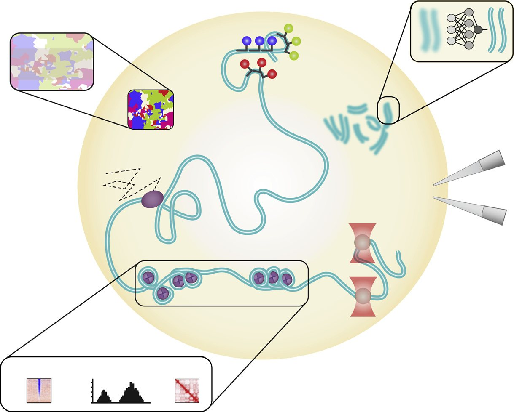
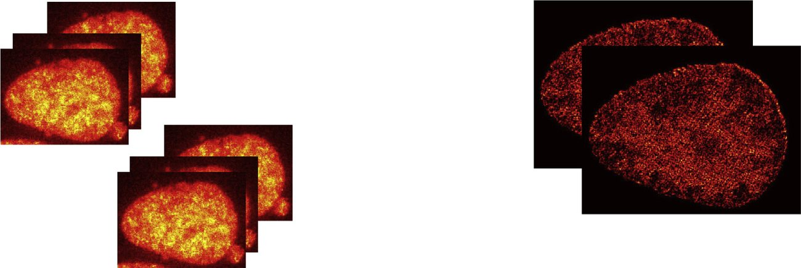
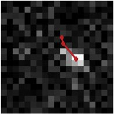
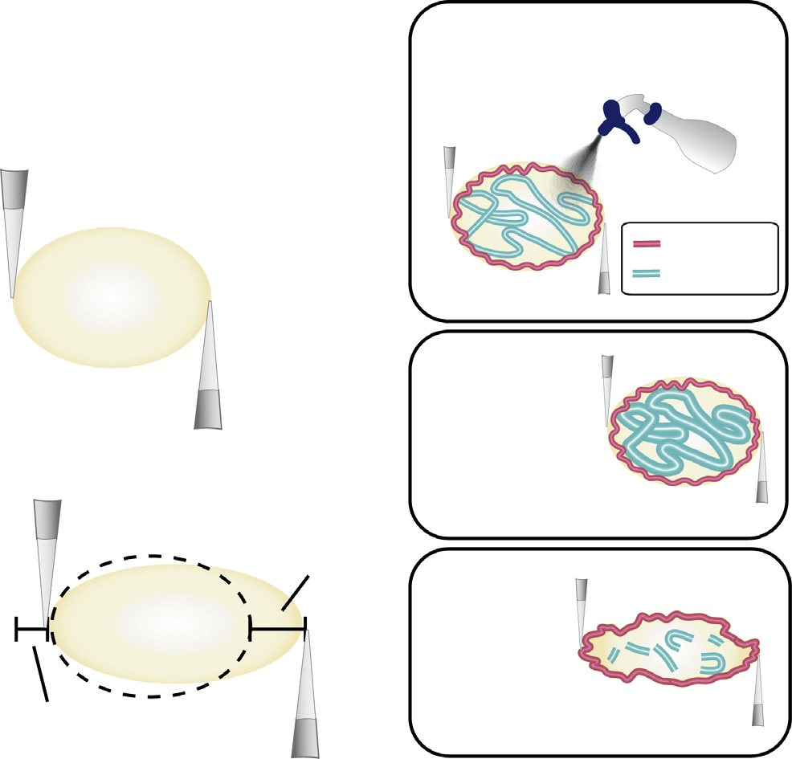
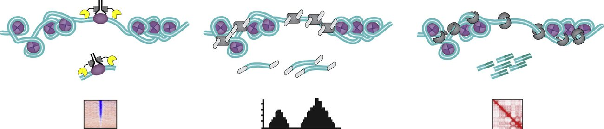

Unified Model of Protein Evolution
Advances in chromatin and chromosome research: perspectives from multiple fields
Introduction
DNA within eukaryotic nuclei exists as a protein-DNA complex called chromatin. The fundamental unit of chromatin is the nucleosome, composed of approximately 146 bp of DNA coiled around a histone protein octamer (Luger et al., 1997). Decades of research showed that chromatin organization is important to regulate several DNA-based transactions including transcription, DNA repair and replication (Bickmore and van Steensel, 2013;Bonev and Cavalli, 2016;Pombo and Dillon, 2015;Seeber et al., 2018;Sexton and Cavalli, 2015). Yet despite tremendous progress in the field, particularly with regards to transcription and DNA repair, how chromatin impacts development, disease, and evolution remains largely unexplored.
The aim of this collaborative review is to highlight key technologies that can be used to address major questions in chromatin biology (Figure 1; Table 1). These include cutting-edge microscopy techniques to image chromatin organization with super resolution, tools to physically manipulate chromatin, computational imaging tools to interpret chromatin structure and dynamics, and powerful single-cell chromatin accessibility techniques. We include viewpoints from early-stage researchers in adjacent fields that complement chromatin research, for instance, how methods used in protein structure prediction may help solve the chromatin structure prediction problem. Importantly, this review gathers perspectives from not only the laboratories that develop these technologies but also from fields that are ready to exploit them, such as organismal and developmental biology or the recently revitalized field of phase separation. We hope this joint effort will drive further collaborations within the chromatin community, as well as draw new interest from outside fields, to advance chromatin biology.

Imaging Chromatin and Nuclear Proteins Multiplexed FISH Combined with Super-Resolution Imaging to Study Chromatin Structure
The spatial organization of interphase chromatin and its interplay with various biological functions has been one of the most intriguing open questions in cell biology. Imaging methods such as fluorescence in situ hybridization (FISH) have been essential to our understanding of the structure and function of chromatin (Speicher and Carter, 2005). Despite having much higher spatial resolving capabilities, electron microscopy (EM), which has been instrumental in the characterization of euchromatin and heterochromatin, cannot identify specific genomic regions (Monneron and Bernhard, 1969). In contrast, FISH and in situ sequencing-based approaches have the advantage of obtaining both the spatial and genomic information of the signal in single cells. Chromosomes were first directly revealed to be organized into distinct spatial territories in the cell nucleus during interphase by 3D-FISH probes designed to target-specific chromosomes (Lichter et al., 1988). However, these early FISH techniques did not have the genomic and spatial resolution necessary to characterize finer chromosome structures and the organization of chromatin at the sub-microscopic scale.
With the advent of chromosome conformation capture (3C)based technologies and the discovery of novel structures such as topologically associated domains (TADs), compartments, and loops (Dekker et al., 2002;Gibcus et al., 2018;Rao et al., 2014), excitement has grown to understand how these structures manifest in single cells, and how they contribute to various genome functions. A major advance in FISH-based technology was the development of single-molecule FISH (smFISH), first demonstrated to detect single mRNA molecules as a diffraction-limited spot (Femino et al., 1998). Another catalyst was the adoption of massively parallel oligonucleotide synthesis methods to generate customized complex oligonucleotide libraries such as Oligopaint (Beliveau et al., 2012), which greatly facilitated the detection of multiple non-repetitive nucleic acid species.
The density of target materials in the cell nucleus has long posed a challenge for chromatin imaging. In recent years, the combination of super-resolution light microscopy and DNA FISH has emerged as an attractive method to study the physical organization of chromatin and revealed distinct organization principles between different epigenetic domains and their interfaces (Beliveau et al., 2015;Boettiger et al., 2016). However, in order to map the 3D structure of large stretches of chromatin (C) Micro-manipulation of isolated nuclei using pipettes can be used to measure forces acting on the nucleus and how they change in response to different environmental conditions. (D) While still in an early phase of development, trapping and manipulation of chromatin using optical tweezers has great potential to be a powerful tool to study chromatin in vivo. (E) A variety of sequencing-based genomic approaches that probe chromatin exist. Arguably the most important of these is Hi-C, which quantifies the number of interactions between genomic loci that are nearby in 3-D space (not discussed in detail in this review). Important complements to this method, are techniques that measure chromatin-protein interactions such as CUT&RUN or those that measure chromatin accessibility, such as ATAC-seq. (F) Single-particle tracking of proteins and chromatin loci has been the gold standard to measure their dynamics. New technological developments are overcoming old hurdles such as motion blur and photobleaching, greatly improving tracking. (G) Mapping global chromatin dynamics is now possible using an optical flow-based technique called Hi-D. Here, thousands of trajectories are generated for a single nucleus, which in turn can be used to generate a heatmap of motion types, i.e., sub-diffusive or directed motion. The next frontier in chromatin research will be to apply these technologies to organoids, tissues, and multicellular organisms (common as well as more unusual).
at higher genomic resolution, the detection and multiplexing capabilities of FISH labeling need enhancement. More recently, multiplexed FISH approaches that were developed for RNA imaging (Chen et al., 2015;Lubeck et al., 2014) were adapted to label tens of genomic regions corresponding to TADs observed by Hi-C in single human cells (Wang et al., 2016), and was later applied to mammalian tissues in combination with multiplexed RNA FISH (Liu et al., 2020). Improved multiplexed imaging combined with super-resolution stochastic optical reconstruction microscopy (STORM) revealed highly variable chromatin domains that form independent of cohesin (Bintu et al., 2018;Nir et al., 2018). This method has also been applied to developing Drosophila embryos in combination with RNA FISH to illustrate the relationship between enhancer-promoter interaction and nascent transcription (Mateo et al., 2019). Another approach is to combine multiplexed FISH labeling with live-cell chromatin imaging, where the identity of genomic regions of interest can be identified after their dynamics have been recorded in the same cell (Guan et al., 2017;Takei et al., 2017). With in situ imaging-based transcriptomics methods now capable of profiling more than 10,000 nucleic acid species (Eng et al., 2019;Shah et al., 2018;Xia et al., 2019a), it is intriguing to entertain the possibility of adapting them for chromatin tracing of whole chromosomes or even the entire genome at high resolution to study various open questions in genome biology in combination with RNA and protein imaging.
Imaging of Whole-Chromosome Dynamics on Macroscopic Length Scales in Living Cells
Table 1. Summary of Chromatin Technologies Discussed in This Review
Chromatin Technology
Application Highlighted References Imaging Multiplex FISH chromosome structure and organization in living cells Beliveau et al., 2012Beliveau et al., , 2015;;Bintu et al., 2018;Boettiger et al., 2016;Chen et al., 2015;Guan et al., 2017;Liu et al., 2020;Lubeck et al., 2014;Mateo et al., 2019;Nir et al., 2018;Takei et al., 2017;Wang et al., 2016 Single-particle tracking protein and DNA motion tracking Gebhardt et al., 2013;Hansen et al., 2018;Lee et al., 2017;Liu et al., 2015;Mazza et al., 2012;Persson et al., 2013;Rhodes et al., 2017 Hi-D, DFCC, Deep-PALM, single nucleosome imaging nucleosome, chromatin domain, and global chromatin dynamics, correlated motion Barth et al., 2020a;Gupta et al., 2019;Voulodimos et al., 2018;Wang et al., 2019a;Wei et al., 2019;Weigert et al., 2018;Barth et al., 2020b;Hihara et al., 2012;Miron et al., 2019;Nagashima et al., 2019;Nozaki et al., 2017;Shaban andSeeber, 2020a, 2020b;Shaban et al., 2018Shaban et al., , 2020 Computational imaging resolve images using machine learning algorithm Barth et al., 2020a;Gupta et al., 2019;Voulodimos et al., 2018;Wang et al., 2019a;Wei et al., 2019;Weigert et al., 2018 Chromatin Manipulation Optical tweezers physical manipulation of chromatin with lasers Bennink et al., 2001a;Kanger et al., 2008;Leuba et al., 2000;Marko andSiggia, 1995, 1997;Miroshnikova et al., 2017;Roopa and Shivashankar, 2006;Syrchina et al., 2020 Nuclear Micro-manipulation study the physical properties of the nucleus such as force and elasticity Banigan et al., 2017;Stephens et al., 2017Stephens et al., , 2018Stephens et al., , 2019aStephens et al., , 2019b Genomics CUT&RUN, CUT&Tag, ssChiC-seq DNA-protein interactions Carter et al., 2019;Kaya-Okur et al., 2019;Ku et al., 2019;Nair et al., 2019;Skene and Henikoff, 2017 ATAC-seq chromatin accessibility Buenrostro et al., 2013Buenrostro et al., , 2018;;Cusanovich et al., 2015;Lareau et al., 2019;Preissl et al., 2018 individualized objects. Similarly, meiosis involves a complex dance of interactions between homologous chromosomes, which occurs during a prolonged prophase stage. Early light microscope visualizations were followed by EM, which affords nanometer resolution, e.g., of mitotic metaphase chromosomes (Figure 2A from Maeshima et al., 2005) and the meiotic synapto- (A) EM images of an isolated mitotic chromosome (Maeshima et al., 2005). (B) EM image of a 3D section showing a segment of synaptonemal complex (SC) with associated crossover recombination complex (arrow) (Zickler and Espagne, 2016). (C-E) 3D-SIM images of the SC transverse filament protein GFP-tagged at the C terminus (C) or the N terminus (D) reveal molecular orientations of dimer complexes (E) (Dubois et al., 2019). (F) 3D Airyscan snapshot of EGFP-TopIIa in a living cell reveals the bulky mitotic chromosome axis meshwork and linkage of sister axes by evenly spaced ''mini-axis'' bridges (Chu et al., 2020).
(G) 3D-SIM image of a nuclear complement of SCs with lateral elements are tagged by Pds5-GFP and (evenly spaced) crossover recombination complexes tagged by HEI10-mCherry (De Muyt et al., 2014). (H-K) Mitotic chromosome axes and bridges visualized as in (F) (H) rendered in PyMOL along with corresponding axis intensity centroid paths of sister chromatids (I). Red and blue indicate left-and righthanded helicity, respectively. (J) Centroid paths in (I) with bridge positions indicated as defined from (H). (K) Enlarged segment of an axis centroid path showing sequential half-helical segments of alternating handedness (perversions). (L) 3D time-lapse movie of TopIIa axes imaged and analyzed as in (H) and (I) (bridges not visible) showing dynamic fluctuations over <15 s timescale. (F and H-L are from Chu et al. [2020].) (M and N) Muntjac (DM87) chromosomes labeled with Alexa555-dUTP in S-phase and imaged immediately after labeling (M) or, after segregation of a single chromosome, four generations later (N). Images taken with Nikon Ti wide-field epifluorescence microscope and filtered using a Twostage Likelihood Pipeline (N. Vincenten, F. Chang, and N. Kleckner, personal communication). nemal complex (SC), a conserved structure that links homologous chromosome axes (Figure 2B from Zickler and Espagne, 2016). Super-resolution fluorescence imaging methodologies, plus immuno-gold EM, can now define the molecular composition of macroscopic features (e.g., as for SC transverse filaments [e.g., Figures 2C-2E from Dubois et al., 2019; Herna ´ndez-Herna ´ndez et al., 2016] and axes [Ko ¨hler et al., 2017]). In addition, super-and high-resolution fluorescence imaging can reveal global features that have previously been missed (e.g., mini-axis bridges between mitotic sister chromatids [Figure 2F from Chu et al. [2020], in this issue of Molecular Cell]). Delineation of macroscopic features also reveals spatial patterning along chromosomes, which implies the presence of communication over long length scales. A classic example is meiotic ''crossover interference'' (Kleckner et al., 2004). Crossover recombination complexes occur at different positions in different nuclei; nonetheless, they always tend to be evenly spaced along the chromosomes (Figure 2G from De Muyt et al., 2014). Mitotic chromosomes also exhibit spatial patterns: even spacing of inter-sister bridges (Figure 2F) and axis paths comprising sequential half-helical segments of alternating helical handedness (''perversions'') (Figures 2H-2K from Chu et al. [2020]). Understanding such spatial patterns, including determination of whether communication occurs by mechanical stress redistribution (Kleckner et al., 2004) and/or reaction-diffusion (e.g., Vecchiarelli et al., 2014), is an interesting area for future investigation.
Chromosomes exhibit fascinating behaviors on length scales ranging from ~100 nm to multiple microns, at all stages of the mitotic cell cycle, and in meiosis. Such macroscopic effects are uniquely accessible by high-resolution fluorescence imaging of chromosomes in living cells, in two and three dimensions and, ideally, over time. Macroscopic chromosomal behaviors are particularly apparent in the latter stages of the mitotic cell cycle, when chromosomes (and their sister chromatids) become discrete,
The importance of visualizing chromosomes in living cells cannot be overstated. The potential for artifacts casts a shadow on all fixed-cell chromosome studies, a risk sometimes justified and sometimes not. Video micrographs of large plant chromosomes gave the first glimpse of the dynamics of whole individualized chromosomes in living cells (Bajer, 1965;Inoue ánd Oldenbourg, 1998). Modern fluorescence imaging of living cells removes the threat of fixation artifacts, with the added power of visualizing specific molecules, albeit with new limitations due to photobleaching and phototoxicity.
Most importantly, coupling of time-lapse imaging of living cell chromosomes with other approaches reveals new dynamic behaviors. For example, the process of chromosome compaction is seen to be accompanied by dynamic fluctuations in axis conformation on timescales of 15 s or less (Figure 2L from Chu et al. [2020]). Coupling of single-chromosome time-lapse imaging with degron analysis or optogenetic removal can reveal the consequences of molecular elimination on an individual chromosome basis, in real time, thereby complementing molecular and/or population studies. A holy grail would be the real-time detection of communication along chromosomes during spatial patterning. Overall, chromosomes are ultimately coherent mechanical objects whose evolution, motions, and behaviors reflect the operation of internal and external forces (Kleckner et al., 2004;Liang et al., 2015;Marko and Poirier, 2003). Such effects can only be investigated by visualization of individual chromosomes in living cells over time, in unperturbed cells or with genetic or physical modulation of mechanical perturbations.
Unique insights into whole-chromosome dynamics can also be provided by new applications of the well-known methodology in which fluorescent nucleotides are incorporated into chromosomes during S-phase (Manders et al., 1999;Schermelleh et al., 2001). Under appropriate conditions, such incorporation can create an array of chromosome speckles throughout the entire genome or, after several rounds of division, individual chromosomes (Figures 2M and 2N) with differentiation of ATand GC-rich regions (Schermelleh et al., 2001) (and thus the A and B compartments revealed by Hi-C), in 3D over desired time intervals and time spans. Tracking of such signals in low signal-to-noise ratio regimes can define the dynamics of whole-chromosome behaviors throughout the cell cycle, before and after they emerge as discrete objects.
Chromosomes are the basis of heredity, both for single cells and for sexually reproducing organisms. The power of modern 3D time-lapse fluorescence imaging, with increasing capacity for detection at low signal-to-noise ratios, and coupled with experimental perturbations, promises to unleash a new wave of understanding from unique molecular, mechanistic, dynamic, and mechanical perspectives. Studying Whole-Genome Organization and Dynamics in Living Cells Using Deep-PALM As mentioned above, linking chromatin structure to function is one of the most important problems in chromatin biology. Fluorescent live-cell imaging is an ideal method to address this problem (Shaban and Seeber, 2020a). However, a number of technical hurdles must be addressed to study the dynamics and structure of the whole genome in living cells. First, a high-resolution live-cell imaging method is needed that can resolve chromatin structure at temporal resolutions necessary to capture dynamics. Second, an analysis method is required that can spatially resolve bulk and irregular chromatin motion over time with nanoscale sensitivity.
Deep-photoactivated localization microscopy (Deep-PALM) surmounts the first hurdle and simultaneously captures the structure and dynamics of chromatin at high temporal and sub-diffraction limited spatial resolutions (Barth et al., 2020a). Deep-PALM is a live-imaging technology employing a convolutional neural network (deep-learning algorithm, Figure 3) to predict super-resolution images from activated fluorophorelabeled histone proteins. By tuning the network to experimental conditions, a time resolution of 360 ms at a spatial resolution of 65 nm could be achieved, enabling Deep-PALM to resolve elongated (~45 to 90 nm wide) chromatin nanodomains (blobs). Each blob comprises a number of associating nucleosomes (<30), which assemble transiently over the timescale of about 1 s. Estimating the structural parameters such as nearest neighbor distance and size of chromatin blobs show that those blobs are consistent with structures identified in single-molecule localization imaging in fixed cells (Ricci et al., 2015;Xu et al., 2018). The dynamic properties of these blobs are in line with other work based on structural illumination super-resolution microscopy (Miron et al., 2019). To connect the blob formation to biological function, first it would be important to address if blobs consist of the same monomers or if blobs are random formations like a by-product of other processes (activity and polymer topology for instance), intermediate stage, or direct outcome of some biological process (Barth et al., 2020b).

Recently, a set of two methods overcame the second hurdle to track bulk chromatin motion with sub-pixel accuracy (nanoscale resolution) in living cells (Shaban et al., 2018(Shaban et al., , 2020)). Based on the combination of light microscopy and computer vision (Optical Flow) technology, the methods reconstruct the dynamics of bulk chromatin in diffraction-limited optical microscopy images at nanoscale resolution throughout the entire nucleus simultaneously. The first method, called Dense Flow reconstruction and Correlation (DFCC), characterizes and quantifies spatially correlated motion of chromatin (Shaban et al., 2018). The complementary second method, high-resolution diffusion mapping (Hi-D), uses Bayesian inference to relate the observed dynamics pixel by pixel to diffusion models, providing insights into the underlying physics of chromatin dynamics (Shaban et al., 2020). Hi-D builds two-dimensional, high-resolution maps of biophysical properties of the entire nucleus for an integrated characterization of diffusion processes acting on the chromatin fiber at the local and global scale. A combination of Deep-PALM and Hi-D was applied to quantitatively analyze chromatin blob dynamics at nanoscale sensitivity (13.5 nm reconstructed pixel size) and couple it to structural parameters (Barth et al., 2020a).
This technology could be implemented in future work to answer questions on how chromatin structure and dynamics control gene regulation ( Shaban and Seeber, 2020a ), DNA repair ( Shaban and Seeber, 2020b ), replication, and genome organization. With regards to transcription, this technology will be able to test whether chromatin undergoes structural reorganization when shifting from inactive to actively transcribing states and how epigenetic modifications may alter this process. In summary, deep-learning and computer vision methods in combination with optical microscopy pave the way to answering the thorniest questions in chromatin biology. Single-Particle Tracking of Nuclear Proteins While studying the dynamics of chromatin is important to understand processes such as transcription, equally important is the need to examine the dynamics of nuclear proteins including transcription factors (TFs). Single-particle tracking (SPT, or single-molecule tracking) is an attractive technology to do so, since it allows direct visualization of the protein of interest (POI) in its native environment inside the cell. Moreover, SPT can provide nanometer resolution in space and millisecond resolution in time. Recent advances in protein labeling technology, fluorescent dyes, microscopy, and computational analyses now make SPT of nuclear proteins a much more widely accessible technology ( Liu et al., 2015 ). While a wide range of distinct SPT approaches have been reported, the basic principles are the same ( Shao et al., 2018 ). First, the POI is fluorescently labeled, typically with a genetically encoded fluorescent tag, including classic fluorophores, photoswitchable fluorophores (for example, mEos) or with a self-labeling tag such as HaloTag. Second, single proteins are imaged using microscopy techniques that minimize background noise such as total internal reflection fluorescence (TIRF) or highly inclined thin illumination (HILO) ( Tokunaga et al., 2008 ). Third, molecules are localized in each frame and then linked between frames to form trajectories ( Lee et al., 2017 ). Fourth, using the example of DNA-binding proteins such as TFs, the trajectories are analyzed to extract a multitude of information including: the fraction that is bound to DNA, the diffusion coefficients of the bound and free states, the residence time of DNA binding, nuclear organization and clustering, anomalous diffusion, target search mechanism, etc. ( Gebhardt et al., 2013 ; Hansen et al., 2018 ; Lee et al., 2017 ; Mazza et al., 2012 ; Persson et al., 2013 ). These SPT steps are illustrated in Figure 4 , using stroboscopic photo-activation SPT (spaSPT) ( Hansen et al., 2018 ), which relies on photo-activatable Janelia Fluor dyes to minimize tracking errors ( Grimm et al., 2016 ; Manley et al., 2008 ) ( Figure 4 A) and on stroboscopic excitation to minimize ‘‘motion-blur’’ artifacts ( Elf et al., 2007 ; Hansen et al., 2018 ) ( Figure 4 B).
Single-Particle Tracking of Nuclear Proteins

These technological advances have led to a number of new biological insights: SPT has been instrumental in probing how DNA-binding proteins search for and find their target sites inside the crowded nucleus (Hansen et al., 2020;Izeddin et al., 2014;Rhodes et al., 2017). Work from many laboratories suggest that transcription complexes bound to chromatin are unstable with residence times of seconds to tens of seconds (Gebhardt et al., 2013;Mazza et al., 2012;Mir et al., 2018;Shao et al., 2018;Swinstead et al., 2016;Teves et al., 2016). Related to this, SPT has also been used to study the function, dynamics, and selectivity of higher order clusters or hubs of TFs and RNA Polymerase II, as well as how hub formations can be mediated by intrinsically disordered or low-complexity protein domains (Boehning et al., 2018;Cho et al., 2018;Chong et al., 2018;Lu et al., 2018;McSwiggen et al., 2019). SPT has also provided insight into chromosome structure; for instance, SPT studies of CTCF and cohesin, the proteins that form chromosomal loops, suggest that these loops are likely to be dynamic (Hansen et al., 2017) and that only a subset of nuclear proteins serve as mitotic bookmarkers (Oomen et al., 2019;Raccaud et al., 2019;Teves et al., 2016). Importantly, SPT has also been used to probe the function and stoichiometry of the Polycomb complex in vivo, revealing for example how the oncohistone H3.3K27M dysregulates this complex (Tatavosian et al., 2018;Youmans et al., 2018). In summary, SPT of nuclear proteins has recently grown in popularity due to technological advances. This approach is revealing many new biological insights and its growth shows no signs of slowing down. Single-Nucleosome, Live-Cell Imaging Recent evidence suggests that there is, in general, no static 30 nm chromatin fiber in living cells (Eltsov et al., 2008;Fussner et al., 2012;Nishino et al., 2012;Ou et al., 2017). Rather, other chromatin models have been proposed that highlight the irregular folding of chromatin into domains that resemble liquid droplets as well as its dynamic nature (Maeshima et al., 2010). Chromatin labeling, developed in the 1990s, is widely used and can be classified into two types: sequence-specific and non-specific labeling. Genetically encoded bacterial systems such as LacO/ LacI or the ANCHOR (INT/ParB) systems, engineered DNA binding proteins such as TALE-, or CRISPR/Cas9-based labeling systems rely on sequence specificity and can visualize specific genomic regions (reviewed in Seeber et al., 2018). Alternatively, chromatin can be labeled in bulk, for instance, through pulse labeling of DNA replication domains with fluorescent nucleotides, live-cell DNA labels such as Hoescht conjugates or fluorescently tagged histone proteins as mentioned in the previous sections (Bucevi cius et al., 2018;Jackson and Pombo, 1998;Manders et al., 1999;Markaki et al., 2010;Nozaki et al., 2017;Schermelleh et al., 2001;Xiang et al., 2018). Replication domains have an average diameter of approximately 110-150 nm and, while they cannot be stained specifically, they can be differentiated into eu-or heterochromatin domains by timed labeling (Schermelleh et al., 2001) that revealed differences between the dynamics of euchromatin and heterochromatin (Nozaki et al., 2017).
Although single-nucleosome labeling is not currently sequence specific, it does enable us to label and observe the motion of nucleosomes in a whole nucleus. Based on the principles of single-particle tracking PALM (sptPALM) (Betzig et al., 2006;Manley et al., 2008), a number of nucleosomes are activated and tracked over time (e.g., ~100 H2B molecules/time frame (50 ms/nucleus) (Nagashima et al., 2019;Nozaki et al., 2017). These experiments show that nucleosome movement is sub-diffusive and likely constrained by linker DNA (Hihara et al., 2012;Nagashima et al., 2019;Nozaki et al., 2017). By plotting the magnitude of nucleosome dynamics as a 2D heatmap, the spatial distribution of nucleosome dynamics has been visualized in an entire live nucleus (Nagashima et al., 2019;Nozaki et al., 2017). This heatmap revealed the non-homogeneous distribution of nucleosome dynamics: the interior region of the nucleus enriched with euchromatin showed higher movement of nucleosomes, whereas the periphery of the nucleus or the nucleolus enriched with heterochromatin showed lower movement. Combined with correlative immunostaining of proteins, nucleosome movement around specific proteins could also be assessed. Heterochromatin marker trimethylation of histone H3 Lys9 (H3K9me3) indicated reduced nucleosome dynamics around the heterochromatin region (Nozaki et al., 2017). Furthermore, single-nucleosome imaging is easily dealt with a polymer model or statistical analysis and could retrieve more information from single-molecule live-cell imaging data that we could not obtain from fixed cells (Ashwin et al., 2019;Hihara et al., 2012;Maeshima et al., 2015;Shinkai et al., 2016). However, the relationship between chromatin and nucleosome dynamics revealed by chromatin or nucleosome labeling remains obscure.
It is possible to use single-nucleosome imaging based on H2B-PAmCherry to generate super-resolution images of chromatin using sptPALM. Nucleosome distributions displayed clustered patterning, supporting the notion of chromatin domain formation with diameters of approximately 220 nm in living cells (160 nm in fixed cells), (Nozaki et al., 2017). An important question to answer is whether domain movement reflects individual nucleosome movement? To address this question, dual-color labeling and imaging of the single-nucleosome and DNA replication domains was performed. This imaging showed that nucleosomes and nearby domains (<150 nm) moved correlatively, whereas those localizing far apart from one another (>150 nm) moved independently. This suggests that domain movement reflects local nucleosome movement. A more speculative indication from these data is that nucleosomes form a chromatin domain composed of condensed structures like ''liquid droplets'' rather than loose bundles of fibers or extended loops (Nozaki et al., 2017).
In conclusion, chromatin and single-nucleosome live-cell imaging will continue to contribute to change the view of chromatin from fixed and static to irregular and dynamic nature (e.g., liquid droplets of chromatin (Gibson et al., 2019;Maeshima et al., 2010). The loop extrusion model, proposed mainly based on Hi-C data (Fudenberg et al., 2017) will eventually be tested in living cells. Combined with single-molecule imaging of nuclear proteins as described above, live-cell imaging will shed light on how chromatin affects physiological function including nuclear protein target search and the relationships between chromatin features, epigenetic marks, and DNA transactions.
Tools to Manipulate Chromatin and the Nucleus in Living Cells
Measuring the Mechanical Properties of Chromatin with Optical Tweezers Double-stranded DNA is stiff, as revealed by experiments and modeling of force-extension curves where the free end of the rod-like DNA polymer is pulled by a magnetic bead, while its other end is tethered to a surface (Marko and Siggia, 1995). However, chromatin being an assembly of DNA and histone proteins provides a more complex mechano-rheological micro-environment within the nucleus, the functional consequences of which are only beginning to be understood.
Cells are constantly subjected to mechanical cues such as shear stress, differential tissue rigidity, or osmotic stresses, which could be transmitted to the subnuclear lamina via the cytoskeleton. Within the nucleus, chromatin being an active mechanical component, is capable of undergoing dynamic changes due to the application of stresses, which could then have consequences on mechanotransduction of chromatin mediated re-sponses and thence gene expression ( Miroshnikova et al., 2017 ). With the advent of tools such as optical tweezers, it became possible to manipulate small microscopic objects with nanometer precision as well as control and exert forces in the range of 0.1–100 pN. Using optical tweezers and microfluidic flow cells, the force required to unwrap DNA from the histone octamer could be measured (20 pN-40 pN), providing a direct way to study the energetics of the chromatin fiber assembly ( Bennink et al., 2001a ; Brower-Toland et al., 2002 ). Later work used optical tweezers to study remodeling of chromatin fibers and their viscoelasticity by disrupting the tail-tail interactions via enzymes, which could directly be captured via the decrease in stiffness of the chromatin by sensitive force measurements ( Roopa and Shivashankar, 2006 ). While several studies ( Bennink et al., 2001b ; Kanger et al., 2008 ; Leuba et al., 2000 ; Marko and Siggia, 1997 ; Pope et al., 2002 ) have successfully unraveled the mechanical properties of both DNA and chromatin fibers ex vivo , the real challenge is to connect the dynamics of the chromatin associated with applied stresses in physiological conditions in vivo . Given the optical contrast between euchromatin and heterochromatin within the nucleus, optical tweezers are a promising tool to probe mechanical properties such as stiffness and viscous dissipation by applying controlled amounts of forces to the different regions of chromatin. Phagocytosed polystyrene beads with appropriate chemical modifications could also be used to tether parts of chromatin, which could then be manipulated using the tweezers ( Figure 1 ). To study functionally relevant scenarios, one could mimic natural biochemical changes such as acetylation or other modifications to the chromatin micro-environment and directly study the changes caused in the mechanical properties of the chromatin. Using live markers to tag re-porters of gene expression of domains that are suspected to be active in mechanotransduction, actively stretching chromatin could unravel the role and threshold forces required to induce expression. Optical tweezers not only provide a way to capture the properties of chromatin in endogenous settings within the nucleus but also allow active manipulation of the nuclear micro-environment to modulate biological functions such as gene expression ( Bracha et al., 2019 ). Nuclear Micro-manipulation to Study Chromatin Mechanics Micro-manipulation allows for gentle isolation of a single nucleus from living cells to do force measurement, biochemical, and imaging studies not possible with other technologies. This novel technique was adapted from Micro-manipulation studies of single mitotic chromosomes, which detailed the roles of DNA and chromatin proteins in chromosome compaction, organization, and mechanics ( Kawamura et al., 2010 ; Poirier et al., 2002 ). Using Micro-manipulation of micropipettes a single nucleus can be isolated via local spray lysis of the cell and recovered via slight aspiration and non-specific attachment of micropipettes at opposite ends ( Stephens et al., 2017 ). Force-extension measurements of the cell nucleus are accomplished by a ‘‘pull’’ pipette extending the nucleus ( D L), while the ‘‘force’’ pipette’s deflection ( D x), multiplied by a pre-measured bending constant (k fp ), provides a measure of force ( D x*k = F, Hookes’ law; See Figure 5 A).
Nuclear Micro-manipulation to Study Chromatin Mechanics

Force-extension ultimately provides a measurement of the nuclear spring constant (k nuc = F/DL; nN/mm). This technique allows for a wide range and fine control of both speed and length of extension providing the ability to explore both elastic and viscoelastic regimes. Biochemical treatments added via a third spray micropipette in conjunction with reproducible elastic force-extension measurements allow for unparalleled assaying of the same isolated nucleus before and after treatment (Figure 5B). This treatment can include antibody labeling (Biggs et al., 2019;Sun et al., 2018) or fluorescently tagged protein (Banigan et al., 2017) and microscope imaging of structures before, during, and/or after physical manipulation and/or biochemical treatments.
Single-nucleus Micro-manipulation force measurements have provided, for the first time, the ability to separate the different mechanical contributions of chromatin (short extensions) from lamins (strain stiffening at long extensions) to the cell nucleus (Stephens et al., 2017). This technique has led to findings showing that decreased chromatin-based nuclear stiffness modulated by histone modification state results in abnormal nuclear morphology, a hallmark of human disease (Stephens et al., 2018). Abnormal nuclear mechanics and morphology causes rupturing of the cell nucleus leading to nuclear dysfunction such as increased DNA damage (Pfeifer et al., 2018;Stephens et al., 2019a;Xia et al., 2019b). Function can be rescued via increased chromatin-based nuclear mechanics via heterochromatin formation through a mechanotransduction pathway (Stephens et al., 2019b). Biochemical treatments in conjunction with force-extension measurements revealed that, upon DNA digestion, the short extension stiffness regime of the nucleus was lost (Stephens et al., 2017) and the morphology of the nucleus was compromised (Banigan et al., 2017). These data solidify chromatin's role as a major nuclear mechanical component dictating nuclear mechanics, morphology, and function.
Micro-manipulation-based techniques provide a depth of single-cell measurements that could be more largely explored by cell biologists. An easy way to access this technique is to use patch-clamp experimental setups that include the ability to make micropipettes and control them via micromanipulators. Micro-manipulation is being used as a parallel technique with Hi-C to assay chromatin interaction frequency via mechanical strength maintenance. Recent studies using various degrees of DNA digestion revealed the interaction frequency of the genome to be 10-25 kb as measured by physical resistance (Micro-manipulation) and proximity (Hi-C) (Belaghzal et al., 2019). Beyond force measurements, isolation of single nuclei via Micro-manipulation could be combined with other single-cell studies, in vitro biochemistry via micropipette spray, and imaging to provide experimental capabilities not previously possible. Micro-manipulation setups can be fit onto the microscope of your choice, meaning super-resolution imaging is possible. Thus, we highly encourage chromatin and nuclear biologists to consider using Micro-manipulation as a new experimental approach for their research.
DNA-Protein Interactions at Single-Cell Resolution
Chromatin structure and gene expression are regulated by the combinatorial binding of chromatin-associated regulators, including a plethora of TFs, chromatin modifiers, histone modifications, and non-coding RNAs. Traditional genomics approaches to study these interactions have significantly enhanced our understanding of the interplay between these regulatory factors. However, these bulk measurements depend on populationaveraged signals limiting their utility, providing little insight into several critical questions in epigenomics. For example, does heterogeneity in chromatin structure across a relatively homogeneous population of cells result in phenotypic heterogeneity? Is heterogeneity in gene expression (gene expression noise) regulated by chromatin structure? And how and when do cells commit to distinct lineages during the course of differentiation?
Adaptations to chromatin immunoprecipitation (ChIP) and DNA adenine methyltransferase identification (DamID) methods have enabled single-cell analysis of DNA-protein interactions (Kind et al., 2015;Rotem et al., 2015). These pioneering papers have motivated additional methods in the field and significantly intensified our interests in the gene regulatory mechanisms that operate at the single-cell level-often used to provide new insights into the molecular basis of lineage commitment. However, many of these methods suffer from low coverage arising from multi-step molecular biology assays or chromatin purification protocols.
Excitingly, new methods to profile DNA-protein interactions have emerged. For example, CUT&RUN (Figure 6A) and singlecell chromatin immunocleavage sequencing (scChIC-seq) fuses MNase to an antibody enabling low input or single-cell A B measurements (Ku et al., 2019;Skene and Henikoff, 2017). Further, several adaptations to this basic principle have been developed that make use of Tn5 transposase to probe-specific DNA-protein interactions. Cleavage Under Targets and Tagmentation (CUT&Tag) uses a proteinA-Tn5 fusion protein to target a specific antibody bound to the POI inside the nucleus. Tn5 is then activated to insert sequencing adapters in targeted chromatin sites (Kaya-Okur et al., 2019). Others have developed a similar approach (Carter et al., 2019) and further adapted it to combinatorial indexing (Nair et al., 2019). These methods have several advantages over previous methods, including the straightforward compatibility with current single-cell assay for transposase-accessible chromatin using sequencing (ATACseq) methods. As such, we suspect these tools to be adaptable to single-cell ATAC sequencing (scATAC-seq) droplet microfluidics platforms. We can, therefore, anticipate further development and adaptation of these methods to enhance our understanding of epigenomic heterogeneity at single-cell and a single-gene resolution.

There has been a significant interest to develop single-cell technologies offering a range of measurements from multiple angles of chromatin regulation. However, new computational tools and, importantly, continued improvement to our understanding of gene regulation will be essential for our understanding of how these distinct measurements reflecting different layers of gene regulation relate to one another. Further, we foresee an integration of epigenomic tools beyond these sequencing-based methods. Advanced imaging technologies (discussed in this review) provide a direct physical representation of the multilayered 3D chromatin structure. For example, recent developments in high-throughput oligo-based and multiplexed immunolabeling methods have blurred the lines between genomics and imaging, providing new opportunities for epigenomics (Chen et al., 2016;Goltsev et al., 2018;Saka et al., 2019). Furthermore, efforts have integrated imaging ap-proaches with single-cell genome-wide chromatin conformation capture technologies (Stevens et al., 2017;Tan et al., 2018;Wang et al., 2016). One would imagine the development of an ideal technology that can integrate all these approaches to provide a highly resolved spatio-temporal map of epigenomic and transcriptomic events building a stepping stone to understand the complex developmental program of an organism discussed in the next section. scATAC-Seq Single-cell tools are already vastly improving our ability to measure epigenomic variability resulting from changes in chromatin accessibility. Classic studies have shown that nucleosome displacement or reorganization can lead to accessible chromatin. Assay for transposase-accessible chromatin using sequencing (ATAC-seq) makes use of Tn5 transposase to integrate sequencing adaptors into accessible (also known as ''open'') chromatin across the genome (Buenrostro et al., 2013) (Figure 6B). Methods using plate-based DNA barcoding and/or microfluidics with ATAC-seq have resulted in a repertoire of tools that enabled analysis of chromatin accessibility at single-cell resolution (scATAC-seq) (Buenrostro et al., 2018;Cusanovich et al., 2015;Lareau et al., 2019). Applications of these tools have demonstrated the utility of a single-cell approach by unmasking cellular heterogeneity and chromatin regulators of cell-fate determination during various biological processes, including differentiation, development, and embryogenesis (Buenrostro et al., 2018;Preissl et al., 2018).
While these methods are successful in identifying epigenetic states, there is a growing interest to integrate these measurements with the transcriptome within the same single cell to better understand the chromatin mechanisms leading to gene-expression change. As such, an increasing number of ''multi-omic'' methods (methods that seek to make multiple measurements within the same single cell) are emerging to bridge this technological gap (reviewed in Kelsey et al., 2017 As protein A binds specifically to Immunoglobulin G of antibodies, this fusion can be used to target pA-MNase to any nuclear protein, such as a transcription factor, with a sufficiently specific antibody. MNase, activated by the addition of calcium, cleaves DNA, and the resulting fragments can be isolated and sequenced to determine DNA-protein interactions. (B) Assay for transposase-accessible chromatin using sequencing (ATAC-seq) measures the accessibility of chromatin genome-wide by using Tn5 transposase to cleave DNA and integrate sequencing adaptors specifically into open chromatin. The resulting adaptor tagged DNA fragments are then amplified and sequenced to generate an ATAC-seq peak plot. (C) While not discussed in detail in this review, Hi-C is a fundamental technique used to determine chromatin organization. In brief, chromatin is cross-linked using formaldehyde. Following this, chromatin is cut, adjacent pieces are ligated, and fragments are purified and sequenced. A contact map of DNA interactions can then be generated.
and Shema et al., 2019) (Chen et al., 2019;Kelsey et al., 2017;Shema et al., 2019;Zhu et al., 2019). However, current multiomic approaches are often limited by either scalability or sensitivity, making it difficult to resolve the temporal relationship between the epigenomics and the transcriptomic. Therefore, further improvements to current methods may provide an opportunity to infer regulatory relationships between chromatin change and gene expression outcomes to better understand the relationship between the epigenome and transcriptome.
New Concepts for Chromatin Labeling and Imaging
The Role of Phase Separation in Chromatin Organization Euchromatin and heterochromatin separate into distinct domains in the cell nucleus. Recent evidence suggests that phase separation can drive the formation of heterochromatin domains (Gibson et al., 2019;Larson et al., 2017;Strom et al., 2017). A model emerges in which post-translational histone modifications are at the very heart of this physicochemical process. A characteristic feature of heterochromatin is H3K9 methylation bound by heterochromatin protein 1 (HP1). Both, Drosophila HP1a (Strom et al., 2017) and human HP1a (Larson et al., 2017) can oligomerize and support the formation of phase separated constitutive heterochromatin domains (Wang et al., 2019b). However, biophysical properties of HP1a in vivo support a collapsed polymer globule model rather than liquid-liquid phase separation of proteins driving chromocenter formation (Erdel et al., 2020). Phase separation of the Polycomb protein CBX2 has been implicated in the formation of facultative heterochromatin condensates (Tatavosian et al., 2019). Such biomolecular condensates can mechanically interact with chromatin. HP1 droplets can pull in and densely pack DNA (Larson et al., 2017), while other protein droplets have been shown to physically exclude chromatin (Shin et al., 2019). The heterochromatin phase presents a diffusion barrier permissible to some proteins but excluding others, akin to the phenylalanine-glycine hydrogel barrier in the core of nuclear pore complexes that only permits passage of macromolecular cargo decorated with transport receptors that interact with the hydrogel (Schmidt and Go ¨rlich, 2016). The linker histone H1 itself appears to promote phase separation of chromatin (Shakya et al., 2020). Nucleosome spacing as well as post-translational modifications confer specificity to condensates (Gibson et al., 2019). Chromatin with acetylated histones partitioned into distinct condensates when bound by multi-bromodomain proteins in vitro and when injected into live HeLa cells.
Chromatin transactions, such as DNA replication (Parker et al., 2019) and DNA damage repair (Kilic et al., 2019), have been reported to involve the chromatin-assisted formation of phase-separated nuclear bodies. In transcription, extended regulatory chromatin domains termed super enhancers control the expression of lineage-specific TFs (Whyte et al., 2013). These chromatin domains are characterized by extended H3K27 acetylation marks and binding of, among other factors, Mediator, RNA Polymerase II (Pol II), and the multi-bromodomain protein BRD4, all of which associate in condensates in mouse embryonic stem cells (Cho et al., 2018;Sabari et al., 2018). Inhibition of BRD4 binding to H3K27ac led to dissolution of condensates. Condensate-forming proteins often carry intrinsically disordered regions that can form multivalent interactions (Hyman et al., 2014), and non-coding RNA has been implicated in the formation of paraspeckles (Yamazaki et al., 2018), condensates at enhancers (Nair et al., 2019), DNA-damage-response foci (Pessina et al., 2019), and other nuclear bodies (Banani et al., 2017). Phosphorylation of the C-terminal domain (CTD) drives Pol II out of transcription condensates and leads to partitioning into splicing condensates (nuclear speckles) associated with highly transcribed chromatin domains (Chen et al., 2018b;Guo et al., 2019).
From a functional viewpoint, phase separation as a mechanism to organize chromatin and chromatin-based transactions provides a number of benefits (reviewed in Alberti et al., 2019;Banani et al., 2017;Hyman et al., 2014): (1) phase separation is a self-organizing process that does not require energy consumption, (2) the weak but multivalent interactions involved are easier to modulate than protein-protein interactions, (3) small changes in environmental conditions such as pH or temperature can elicit a strong response in systems near phase boundaries, (5) the formation of distinct types of immiscible condensates offers a mechanism to sequester molecules at high concentrations, and (6) partitioning of chromatin and macromolecules into condensates based on reversible marks (post-translational modifications, TF binding, etc.) can confer specificity in the crowded nuclear environment.
While liquid-liquid phase separation of low-order systems in thermodynamic equilibrium may be appropriate to describe droplet formation in vivo, these models do not generally apply to condensates in live cells (Berry et al., 2018;Erdel and Rippe, 2018;So ¨ding et al., 2020). Condensates can mature from liquid to gel-like or solid states (Nair et al., 2019;Patel et al., 2015), modulation of ATP concentration or ionic strength tunes phase behavior (Wright et al., 2019), and condensates can consist of multiple phases themselves (Sawyer et al., 2019). Enzymatic activity by histone acetyltransferases, kinases, chromatin remodelers, or other ATP-consuming proteins can transform condensates into catalytically active droplets (Portz and Shorter, 2019) of dynamic composition. The experimental assessment of in vivo phase separation is further complicated by the small, diffraction-limited size of some phase domains and requires a range of complementary approaches (Peng and Weber, 2019;Alberti et al., 2019). The experimental methods and computational analyses outlined in this review combined with in vitro reconstitution under physiological conditions and theoretical and in silico molecular modeling will dissect nucleation and grow mechanisms, as well as structural roles of scaffold and client factors (Banani et al., 2016). This will ultimately help us understand the exact biophysical mechanisms driving phase separation and its regulation in the cell nucleus. Dynamics and Organization of Nuclear Proteins Governed by Weak Transient Interactions DNA-binding proteins interact transiently with many chromatin sites and specifically with their cognate binding sites (Halford and Marko, 2004). These interactions govern protein dynamics (Hansen et al., 2017;Misteli, 2001) and their distribution in the nucleus (Woringer and Darzacq, 2018). The wealth of microscopy data generated studying the dynamics of nuclear proteins presents a major challenge for computational biologists: how to derive the rules of protein dynamics and distributions from chromatin configuration? Can we infer these interactions and chromatin structure by following the trajectories of tagged proteins (Figure 7A), or observing the manner in which they are distributed in the nucleus? To do so, a theory of protein dynamics and its interaction with chromatin is needed. Facilitated diffusion models (Bauer and Metzler, 2012), previously applied to prokaryotes (Hammar et al., 2012), suggested that proteins perform a mixture of two motion types -1d sliding along the DNA and diffusion in 3d that allows for jumping between sites. Unlike bacterial DNA, mammalian DNA is chromatinized, which could rule out 1d sliding on DNA. While in vitro mammalian TF factors have been shown to slide along the DNA (Chen et al., 2014;McKinney et al., 2004), it is unclear whether this behavior would be dominant in the enormous mammalian nucleus. Chromatin, RNA, and proteins all appear to perform a motion with a curious phenomenology. The motion is often sub-diffusive (Bancaud et al., 2009;Lampo et al., 2017;Shinkai et al., 2016;Weiss et al., 2004), where the mean squared displacement grows as a power law of time with an exponent smaller than one. In addition, the motion is often anisotropic, with a tendency for a backward step (Izeddin et al., 2014). These two features of motion could, in principle, fall into the fractional Brownian motion (Metzler et al., 2014), where this phenomenology is attributed to the memory response of the viscoelastic nuclear media and crowding. Such motion could also be attributed to diffusion near the glass transition (Doliwa and Heuer, 1998;Parry et al., 2014), or in disordered media (Havlin and Ben-Avraham, 2002). However, different proteins exhibit distinct characteristics of motion, which depend on their ability to interact with different nuclear elements (DNA, RNA) (Hansen et al., 2020). This suggests that transient interactions may be the principle determining nuclear mobility (Woringer and Darzacq, 2018).
An important feature of mammalian nuclei is that they contain membrane-less subcompartments such as the nucleolus, Cajal (B) A model wherein protein diffusion in the nucleus is governed by its interaction with trapping zones within which there is a high concentration of binding sites. These zones could be composed of DNA, RNA, or a phase-separated condensate of protein.
(C) The protein (light blue) is observed at three time points (31, 32, 33) along its stochastic trajectory (red curve). Left: outside of the zones, the protein performs free diffusion. Middle: while inside a zone, a protein can be reflected from its boundary. This would result in local retention. Right: if a protein leaves a zone, it is more likely to reattach to it, which would result in apparent anisotropy and sub-diffusion.
bodies, and nuclear speckles (Mao et al., 2011). These compartments can now be imaged with high resolution, and their shape and precise geometry can be measured (Cho et al., 2018). Those nuclear zones are characterized by an increased concentration of some components (proteins, RNA). Such an organization of the mammalian nucleus calls for focusing on geometrical models where sections of the nucleus are tiled with a high concentration of binding sites (Figure 7B). Indeed, it has been shown that the anisotropy of CTCF mobility (Hansen et al., 2020) and Pol II at viral replication sites (McSwiggen et al., 2019) can be explained using such geometrical models. The phenomenology of protein motion and organization naturally arises in such a model: (1) a protein that moves outside a zone would appear to perform Brownian motion (Figure 7C). (2) A protein moving inside a zone is retained for some time, resulting in transient trapping (Figure 7C). This would be the case when there is an energy barrier for the protein to cross the periphery. (3) When a protein has managed to escape a zone, it is likely to reattach and be trapped again, rather than transitioning to another nearby zone (Figure 7C) (Amitai, 2018). Reattachment and retention would both result in apparent sub-diffusive, anisotropy motion but unlike fractional Brownian motion, it will not be scale free but depend on the size of the zone.
Recently, it has been proposed that parts of the nucleus are organized as phase-separated bodies or liquid droplets ( Feric et al., 2016 ; Lin et al., 2015 ). How could one distinguish such an organization from other forms of protein clustering or aggregations? Geometric diffusion models may help us categorize these different modes of protein organization. Indeed, because of the phase boundary, one would expect the retention mechanism ( Figure 7 C) to be a dominant feature in the motion of pro-teins in liquid droplets. This can be assessed by measuring the diffusion coefficient within and without a zone ( Peng and Weber, 2019 ), and characterizing other features of mobility such as anisotropy and the diffusion type. Conversely, in protein cluster/hub/aggregate, the reattachment mechanism ( Figure 7 C) could be the dominant determinant of the phenomenology of protein mobility. A future challenge would be to develop tools to invert the dynamics and distributions of protein, chromatin, and RNA, to estimate the geometry of such zones, and how they control various cellular processes. Chromatin Contact Pattern Recognition in Hi-C: Insights from Protein Structure Prediction In the last two decades, the introduction of chromatin conformation capture (3C) ( Dekker et al., 2002 ) has lead to rapid development of techniques for the identification of 3D chromatin contacts at varying scales and genomic coverage ( Dostie et al., 2006 ; Fullwood et al., 2009 ; Lieberman-Aiden et al., 2009 ; Mifsud et al., 2015 ; Zhao et al., 2006 ). Among these 3C techniques, Hi-C allows for the detection of whole-genome 3D chromatin contact maps, giving hints to large scale (kb-to- Mb) chromatin spatial organization and interaction ( Figure 6 C). These include the identification of global contact similarity (compartments A/B) and local contact insulation (TADs). This is analogous to the protein structure determination problem, where besides crosslinks, contact maps are also derived from nuclear magnetic resonance or covariance found in the alignment of homologous sequences. Unlike proteins, where there is often an experimentally determined structure, it is not clear how to validate these methods for chromatin. However, the analytical techniques and experiences from the field of protein folding might be applicable to elucidating and understanding chromatin structure.
Chromatin Contact Pattern Recognition in Hi-C: Insights from Protein Structure Prediction
One way to mine hidden meaningful patterns is to directly apply unsupervised methods like principal-component analysis (PCA) or clustering. This kind of approach has been used to classify compartments A and B in many cases (Fotuhi Siahpirani et al., 2016;Lieberman-Aiden et al., 2009), and subcompartments sometimes (Rao et al., 2014). However, these approaches do not necessarily correspond to biologically meaningful results. For example, the principle components that represent compartments A/B and those that represent chromosome arms might mix for human samples where the first two components have similar eigenvalues (Liu et al., 2018), challenging the compartment identification in these cases and highlighting the necessity of compartment segregation level evaluation. Moreover, these unsupervised contact pattern recognition methods in Hi-C focus mostly on the most dominant eigenvalues and their corresponding patterns, which give rich domain-level information. In the field of protein structure prediction, long-range contacts are often assumed to be sparse and emerge after removing the low rank dominant eigenvalues (Qin and Colwell, 2018;Zhang et al., 2016). Like protein, the sparse part in Hi-C matrices might contain key patterns and may contribute to direct contacts and therefore possibly lead to more accurate structure determination. Methods like robust-PCA (Cande `s et al., 2011) that decompose matrices into the low-rank and sparse components, inverse covariance, which essentially downweighs the largest eigenvectors, and balanced network deconvolution (BND) (Sun et al., 2015) are tools worth exploring for Hi-C contact pattern investigation and are promising for mining hidden information besides the relatively general domain-level patterns. The methods have been used to infer direct gene regulatory networks and interactions from gene co-expression data (Markowetz and Spang, 2007).
Another way is to observe the contact map directly and describe the contact patterns with parameters based on the ob-servations. TADs are observed as contact blocks near the matrix diagonal and have strong intra-domain contacts and weak interdomain contacts. Their identification is therefore based on block properties such as downstream-upstream difference near boundaries (Dixon et al., 2012), relative insulation from other regions (Crane et al., 2015;Van Bortle et al., 2014), and other matrix properties (Rao et al., 2014). These methods are dependent on contact map resolution and might give varying TAD sizes due to the hierarchical nature of TAD structures.
Similar to protein structure reconstruction, one-dimensional information like epigenetic and/or genomic information can assist identification of different contact patterns, further helping their discrimination. This one-dimensional information may help three-dimensional structure recognition in two ways: it can act as integrated marks or labels in itself or provide hints for uncovering new contact patterns. For example, association of regions with different DNA methylation level to chromatin contact map have been able to uncover different TAD organization patterns, which can be further identified by linear discriminant analysis (Xie et al., 2017) or neuron network classifier (Liu et al., 2018). Integrated epigenetic information have been shown to predict compartments and subcompartments (Di Pierro et al., 2017;Fortin and Hansen, 2015), and, at a smaller scale, TADs and interaction hubs (Huang et al., 2015), indicating their possible role as explicit structure labels in contact pattern recognition. Notably, chromatin structure is highly hierarchical, therefore, the importance of different epigenetic and sequential marks may vary in predicting structures at different scales. By labeling the contact map with one dimensional marks, the originally unsupervised contact pattern mining may switch to a well-aimed image (or network) classification problem. Computational Imaging for Improved Throughput of DNA Damage Assays DNA damage causes genomic instability and is a major driver of cancer and premature aging (Hoeijmakers, 2009). Damage can be induced from endogenous sources, such as reactive oxygen species, or environmental sources including UV and other radiation as well as some of the thousands of chemicals present in industrial processes. For example, diethylhexyl phthalate (DEHP), the most abundant plasticizer used in the production of polyvinyl-containing plastics, increases germline genome instability (Cuenca et al., 2020). As such, understanding how exposure to agents in our environment induces DNA damage is key to revealing the underlying basis for environment-promoted cancer. However, it is difficult to quantify DNA damage at low dose levels since the observed effects can be very small. While there are several approaches for quantifying DNA damage, by far the most sensitive is to assay for the frequency of damage using fluorescent microscopy. This is usually done using a marker for DNA damage, for example, fluorescently labeled DNA repair proteins such as 53BP1 that form DNA damage foci (Rothkamm et al., 2015).
To resolve foci in the nucleus, imaging needs to be done at very high-spatial resolution, preferably in 3D with large enough sample populations to build up robust statistics (Wadduwage et al., 2015). These competing demands translate to a trillion-pixel imaging experiment (for 10 million cells in 3D at diffraction-limited resolution), usually performed using wide-field microscopes (WFMs) equipped with megapixelcameras. With an ~100 mW laser and a 10 ms exposure time, imaging takes about 3 hr. The most basic camera-based microscopes are WFMs followed by spinning-disk confocal microscopes (SDMs). WFMs are simple and power efficient but don't provide the depth selectivity needed for 3D imaging. SDMs use a micro-lens array to perform confocal imaging and have excellent depth resolution. SDMs are also power efficient due to the use of micro lenses (Pawley, 2010). More recently, light-sheet microscopy (LSM) (Ahrens et al., 2013) and structured illumination microscopy (SIM) (Schermelleh et al., 2008) have gained popularity for 3D imaging. While LSM suffers from insufficient depth resolution, SIM could be a competitor to SDM for DNA damage imaging (Choi et al., 2015;Wadduwage et al., 2015). Interestingly, certain variations of SIM satisfy the requirements for compressive sensing (Duarte et al., 2008;Wadduwage et al., 2019), which could, in theory, reduce the measurement time by almost an order of magnitude. But a demonstration for DNA damage imaging has been prevented by the challenges in image reconstruction of foci in the nucleus.
Compressive sensing powered SIM computationally reconstructs the image with the help of prior information about image features. Recent developments in machine learning, such as deep convolutional neural networks (dCNN), can potentially learn all image features in a 3D dataset (Gupta et al., 2019;Wei et al., 2019). While dCNNs are yet to be demonstrated for DNA damage imaging at subcellular resolution, traditional machine learning approaches have shown useful for DNA damage quantification at tissue level at low resolutions (Wadduwage et al., 2018). Thus, we anticipate that the combined power of deep CNNs with compressive SIM will change the imaging instrument landscape. Moreover, CNNs have started to replace almost all image processing algorithms in computer vision (Voulodimos et al., 2018) and will soon be commonplace in fluorescent imaging. Such a cascade of reconstruction and processing CNNs may also provide better compression, reducing the imaging time to just a couple of minutes. This sea change in image acquisition times will have a number of drastic effects on high throughput screening: (1) drug screens for DNA damage will be completed far more quickly, and (2) since acquisition time will no longer be a limiting factor, small effects of drugs or environmental conditions on DNA damage levels only detectable with large sample sets will be determined accurately. While this section discussed CNNs in the context of DNA damage, we note that this is only one application of this technology and that many biological imaging processes will be greatly facilitated by implementing compressive sensing or CNNs into their image analysis pipelines.
Moving from Cells to Organisms
The cutting-edge technologies transforming the chromatin field discussed above have been developed and deployed primarily in cell culture. These protocols are now translating to in vivo studies, and the impact this will have on organismal and developmental biology, regeneration, pathology, and evolution cannot be overstated (Figure 1). Functional genomic methods assessing transcriptional and epigenetic states such as RNA-seq, Hi-C, bisulfite sequencing, and ChIP sequencing (ChIP-seq) have been revolutionary in these fields. However, the large amount of tissue required and the heterogeneity of tissues has made parsing these data difficult and time consuming. Recent advances in single-cell technologies and in vivo imaging techniques change the experimental landscape by providing spatial resolution and sampling of rare subpopulations of cells, essential to understanding developmental and physiological states.
Drosophila
has provided an amenable context for translating many of these new methods from cell culture to the organism (Chen et al., 2018a;Cusanovich et al., 2018;Lim et al., 2018). The extensive history of developmental genetics and the regularity of the early syncytial embryo supports this transition. Super-resolution microscopy methods have allowed for in situ imaging of enhancer-promoter interactions in combination with nascent transcript detection in fixed tissue (Mateo et al., 2019). In addition, live-imaging enhancer-promoter dynamics in the Drosophila embryo, in combination with cell-culture work, is overturning our understanding of long-distance chromosomal interactions (Heist et al., 2019;Lim et al., 2018).
Single-cell sequencing advances have already proven to refine cell-and stage-specific epigenomic states in the developing retina, cardiac tissue, neural crest, forebrain, and immune system (Jia et al., 2018;Norrie et al., 2019;Preissl et al., 2018;Yoshida et al., 2019). This enhanced resolution identified previously unknown cell types and transitory states in the process of differentiation. Greater clarity of cell trajectories is a powerful and essential step in the advancement of tissue engineering and regenerative biology (Kim et al., 2019;Scott et al., 2019). In addition, combinatorial epigenetic and transcriptional states will allow for more sensitive assessment of disease phenotypes, having immediate clinical implications for low-tissue pathological testing (Granja et al., 2019;Strzelecka et al., 2018).
These technologies also offer significant advances to the field of evolution and ecology. The limitation of genetic and epigenetic investigation across the phylogenetic tree has been the need for community investment to generate mutant and transgenic lines, specific antibodies, and sequencing resources. Long-read technology and chromosomal assembly methods have made genome assembly of non-traditional model organisms relatively common. New genomes in conjunction with new methods such as scRNA-seq and ATAC-seq have made cutting-edge transcriptional and epigenomic data accessible in the least experimentally accessible taxa in the tree of life, opening new fields of evolutionary and ecological inquiry (Gehrke et al., 2019;Lewis and Reed, 2019;Madgwick et al., 2019;Reynoso et al., 2019;Weizman and Levy, 2019). Furthermore, greater taxonomic sampling is revealing the evolution of genome organization and epigenetic mechanisms and how these manifest and contribute to organismal plasticity and complexity (Lu et al., 2019;Marle ´taz et al., 2018).
Conclusions
This review combines snapshots of technologies that will be crucial for the advancement of chromatin biology combined with perspectives on key research areas where these techniques can be applied such as organismal and developmental biology or phase separation. We hope that this effort will prime the creativity of the next generation of chromatin biologists and drive deeper collaborations between scientific communities.
Figure 2. Whole-Chromosome Imaging
Figure 7. A Model for Nuclear Protein Dynamics Based on Retention and Reattachment (A) Characteristic stochastic trajectories of tagged proteins.(B) A model wherein protein diffusion in the nucleus is governed by its interaction with trapping zones within which there is a high concentration of binding sites. These zones could be composed of DNA, RNA, or a phase-separated condensate of protein.(C) The protein (light blue) is observed at three time points (31, 32, 33) along its stochastic trajectory (red curve). Left: outside of the zones, the protein performs free diffusion. Middle: while inside a zone, a protein can be reflected from its boundary. This would result in local retention. Right: if a protein leaves a zone, it is more likely to reattach to it, which would result in apparent anisotropy and sub-diffusion
References
- Peng A, Weber S. Evidence for and against Liquid-Liquid Phase Separation in the Nucleus. Noncoding RNA 2019
- Ahrens M, Orger M, Robson D, Li J, Keller P. Whole-brain functional imaging at cellular resolution using light-sheet microscopy. Nat. Methods 2013
- Alberti S, Gladfelter A, Mittag T. Considerations and Challenges in Studying Liquid-Liquid Phase Separation and Biomolecular Condensates. Cell 2019
- Amitai A. Chromatin Configuration Affects the Dynamics and Distribution of a Transiently Interacting Protein. Biophys. J 2018
- Ashwin S, Nozaki T, Maeshima K, Sasai M. Organization of fast and slow chromatin revealed by single-nucleosome dynamics. 2019
- Bajer A. Subchromatid structure of chromosomes in the living state. Chromosoma 1965
- Banani S, Rice A, Peeples W, Lin Y, Jain S, Parker R, Rosen M. Compositional Control of Phase-Separated Cellular Bodies. Cell 2016
- Banani S, Lee H, Hyman A, Rosen M. Biomolecular condensates: organizers of cellular biochemistry. Nat. Rev. Mol. Cell Biol 2017
- Bancaud A, Huet S, Daigle N, Mozziconacci J, Beaudouin J, Ellenberg J. Molecular crowding affects diffusion and binding of nuclear proteins in heterochromatin and reveals the fractal organization of chromatin. EMBO J 2009
- Banigan E, Stephens A, Marko J. Mechanics and Buckling of Biopolymeric Shells and Cell Nuclei. Biophys. J 2017
- Barth R, Bystricky K, Shaban H. Coupling chromatin structure and dynamics by live super-resolution imaging. Sci. Adv 2020
- Barth R, Fourel G, Shaban H. Dynamics as a cause for the nanoscale organization of the genome. Nucleus 2020
- Bauer M, Metzler R. Generalized facilitated diffusion model for DNA-binding proteins with search and recognition states. Biophys. J 2012
- Belaghzal H, Borrman T, Stephens A, Lafontaine D, Venev S, Weng Z, Marko J, Dekker J. Compartment-dependent chromatin interaction dynamics revealed by liquid chromatin Hi-C. bioRxiv 2019. doi:10.1101/704957
- Beliveau B, Joyce E, Apostolopoulos N, Yilmaz F, Fonseka C, Mccole R, Chang Y, Li J et al. Versatile design and synthesis platform for visualizing genomes with Oligopaint FISH probes. Proc. Natl. Acad. Sci. USA 2012
- Beliveau B, Boettiger A, Avendan ˜o M, Jungmann R, Mccole R, Joyce E, Kim-Kiselak C, Bantignies F et al. Single-molecule super-resolution imaging of chromosomes and in situ haplotype visualization using Oligopaint FISH probes. Nat. Commun 2015
- Bennink M, Leuba S, Leno G, Zlatanova J, De Grooth B, Greve J. Unfolding individual nucleosomes by stretching single chromatin fibers with optical tweezers. Nat. Struct. Biol 2001
- Bennink M, Pope L, Leuba S, De Grooth B, Greve J. Single chromatin fibre assembly using optical tweezers. Single Mol 2001
- Berry J, Brangwynne C, Haataja M. Physical principles of intracellular organization via active and passive phase transitions. Rep. Prog. Phys 2018
- Betzig E, Patterson G, Sougrat R, Lindwasser O, Olenych S, Bonifacino J, Davidson M, Lippincott-Schwartz J et al. Imaging intracellular fluorescent proteins at nanometer resolution. Science 2006
- Bickmore W, Van Steensel B. Genome architecture: domain organization of interphase chromosomes. Cell 2013
- Biggs R, Liu P, Stephens A, Marko J. Effects of altering histone post-translational modifications on mitotic chromosome structure and mechanics. Mol. Biol. Cell 2019
- Bintu B, Mateo L, Su J, Sinnott-Armstrong N, Parker M, Kinrot S, Yamaya K, Boettiger A et al. Super-resolution chromatin tracing reveals domains and cooperative interactions in single cells. Science 2018
- Boehning M, Dugast-Darzacq C, Rankovic M, Hansen A, Yu T, Marie-Nelly H, Mcswiggen D, Kokic G et al. RNA polymerase II clustering through carboxy-terminal domain phase separation. Nat. Struct. Mol. Biol 2018
- Boettiger A, Bintu B, Moffitt J, Wang S, Beliveau B, Fudenberg G, Imakaev M, Mirny L et al. Super-resolution imaging reveals distinct chromatin folding for different epigenetic states. Nature 2016
- Bonev B, Cavalli G. Organization and function of the 3D genome. Nat. Rev. Genet 2016
- Bracha D, Walls M, Brangwynne C. Probing and engineering liquid-phase organelles. Nat. Biotechnol 2019
- Brower-Toland B, Smith C, Yeh R, Lis J, Peterson C, Wang M. Mechanical disruption of individual nucleosomes reveals a reversible multistage release of DNA. Proc. Natl. Acad. Sci. USA 2002
- Bucevi Cius J, Keller-Findeisen J, Gilat T, Hell S, Lukinavi Cius G. Rhodamine-Hoechst positional isomers for highly efficient staining of heterochromatin. Chem. Sci. (Camb.) 2018
- Buenrostro J, Giresi P, Zaba L, Chang H, Greenleaf W. Transposition of native chromatin for fast and sensitive epigenomic profiling of open chromatin, DNA-binding proteins and nucleosome position. Nat. Methods 2013
- Buenrostro J, Corces M, Lareau C, Wu B, Schep A, Aryee M, Majeti R, Chang H et al. Integrated Single-Cell Analysis Maps the Continuous Regulatory Landscape of Human Hematopoietic Differentiation. Cell 2018
- Cande `s E, Li X, Ma Y, Wright J. Robust principal component analysis?. J. Assoc. Comput. Mach 2011
- Carter B, Ku W, Tang Q, Zhao K. Mapping Histone Modifications in Low Cell Number and Single Cells Using Antibody-guided Chromatin Tagmentation (ACT-seq). Nat. Commun 2019
- Chen J, Zhang Z, Li L, Chen B, Revyakin A, Hajj B, Legant W, Dahan M et al. Single-molecule dynamics of enhanceosome assembly in embryonic stem cells. Cell 2014
- Chen K, Boettiger A, Moffitt J, Wang S, Zhuang X. RNA imaging. Spatially resolved, highly multiplexed RNA profiling in single cells. Science 2015
- Chen X, Shen Y, Draper W, Buenrostro J, Litzenburger U, Cho S, Satpathy A, Carter A et al. ATAC-see reveals the accessible genome by transposase-mediated imaging and sequencing. Nat. Methods 2016
- Chen H, Levo M, Barinov L, Fujioka M, Jaynes J, Gregor T. Dynamic interplay between enhancer-promoter topology and gene activity. Nat. Genet 2018
- Chen Y, Zhang Y, Wang Y, Zhang L, Brinkman E, Adam S, Goldman R, Van Steensel B et al. Mapping 3D genome organization relative to nuclear compartments using TSA-Seq as a cytological ruler
- Chen S, Lake B, Zhang K. High-throughput sequencing of the transcriptome and chromatin accessibility in the same cell. Nat. Biotechnol 2019
- Cho W, Spille J, Hecht M, Lee C, Li C, Grube V, Cisse I. Mediator and RNA polymerase II clusters associate in transcriptiondependent condensates. Science 2018
- Choi H, Wadduwage D, Tu T, Matsudaira P, So P. Three-dimensional image cytometer based on widefield structured light microscopy and high-speed remote depth scanning. Cytometry A 2015
- Chong S, Dugast-Darzacq C, Liu Z, Dong P, Dailey G, Cattoglio C, Heckert A, Banala S et al. Imaging dynamic and selective low-complexity domain interactions that control gene transcription. Science 2018
- Chu L, Liang Z, Mukhina M, Fisher J, Vincenten N, Zhang Z, Hutchinson J, Zickler D et al. The 3D Topography of Mitotic Chromosomes. Mol. Cell 2020
- Crane E, Bian Q, Mccord R, Lajoie B, Wheeler B, Ralston E, Uzawa S, Dekker J et al. Condensin-driven remodelling of X chromosome topology during dosage compensation. Nature 2015
- Cuenca L, Shin N, Lascarez-Lagunas L, Martinez-Garcia M, Nadarajan S, Karthikraj R, Kannan K, Colaia ´covo M. Environmentallyrelevant exposure to diethylhexyl phthalate (DEHP) alters regulation of double-strand break formation and crossover designation leading to germline dysfunction in Caenorhabditis elegans. PLoS Genet 2020
- Cusanovich D, Daza R, Adey A, Pliner H, Christiansen L, Gunderson K, Steemers F, Trapnell C et al. Multiplex single cell profiling of chromatin accessibility by combinatorial cellular indexing. Science 2015
- Cusanovich D, Reddington J, Garfield D, Daza R, Aghamirzaie D, Marco-Ferreres R, Pliner H, Christiansen L et al. The cis-regulatory dynamics of embryonic development at single-cell resolution. Nature 2018
- De Muyt A, Zhang L, Piolot T, Kleckner N, Espagne E, Zickler D. E3 ligase Hei10: a multifaceted structure-based signaling molecule with roles within and beyond meiosis. Genes Dev 2014
- Dekker J, Rippe K, Dekker M, Kleckner N. Capturing chromosome conformation. Science 2002
- Di Pierro M, Cheng R, Lieberman Aiden E, Wolynes P, Onuchic J. De novo prediction of human chromosome structures: Epigenetic marking patterns encode genome architecture. Proc. Natl. Acad. Sci. USA 2017
- Dixon J, Selvaraj S, Yue F, Kim A, Li Y, Shen Y, Hu M, Liu J et al. Topological domains in mammalian genomes identified by analysis of chromatin interactions. Nature 2012
- Doliwa B, Heuer A. Cage Effect, Local Anisotropies, and Dynamic Heterogeneities at the Glass Transition: A Computer Study of Hard Spheres. Phys. Rev. Lett 1998
- Dostie J, Richmond T, Arnaout R, Selzer R, Lee W, Honan T, Rubio E, Krumm A et al. Chromosome Conformation Capture Carbon Copy (5C): a massively parallel solution for mapping interactions between genomic elements. Genome Res 2006
- Duarte M, Davenport M, Takhar D, Laska J, Sun T, Kelly K, Baraniuk R. Single-pixel imaging via compressive sampling. IEEE Signal Process. Mag 2008
- Dubois E, De Muyt A, Soyer J, Budin K, Legras M, Piolot T, Debuchy R, Kleckner N et al. Building bridges to move recombination complexes. 2019
- Elf J, Li G, Xie X. Probing transcription factor dynamics at the single-molecule level in a living cell. Science 2007
- Eltsov M, Maclellan K, Maeshima K, Frangakis A, Dubochet J. Analysis of cryo-electron microscopy images does not support the existence of 30-nm chromatin fibers in mitotic chromosomes in situ. Proc. Natl. Acad. Sci. USA 2008
- Eng C, Lawson M, Zhu Q, Dries R, Koulena N, Takei Y, Yun J, Cronin C et al. Transcriptome-scale Super-Resolved imaging in tissues by RNA seqFISH. Nature 2019
- Erdel F, Rippe K. Formation of Chromatin Subcompartments by Phase Separation. Biophys. J 2018
- Erdel F, Rademacher A, Vlijm R, T€ Unnermann J, Frank L, Weinmann R, Schweigert E, Yserentant K et al. Mouse Heterochromatin Adopts Digital Compaction States without Showing Hallmarks of HP1-Driven Liquid-Liquid Phase Separation. Mol. Cell 2020
- Femino A, Fay F, Fogarty K, Singer R. Visualization of single RNA transcripts in situ. Science 1998
- Feric M, Vaidya N, Harmon T, Mitrea D, Zhu L, Richardson T, Kriwacki R, Pappu R et al. Coexisting Liquid Phases Underlie Nucleolar Subcompartments. Cell 2016
- Fortin J, Hansen K. Reconstructing A/B compartments as revealed by Hi-C using long-range correlations in epigenetic data. Genome Biol 2015
- Fotuhi Siahpirani A, Ay F, Roy S. A multi-task graph-clustering approach for chromosome conformation capture data sets identifies conserved modules of chromosomal interactions. Genome Biol 2016
- Fudenberg G, Abdennur N, Imakaev M, Goloborodko A, Mirny L. Emerging Evidence of Chromosome Folding by Loop Extrusion. Cold Spring Harb. Symp. Quant. Biol 2017
- Fullwood M, Liu M, Pan Y, Liu J, Xu H, Mohamed Y, Orlov Y, Velkov S et al. An oestrogen-receptor-alpha-bound human chromatin interactome. Nature 2009
- Fussner E, Strauss M, Djuric U, Li R, Ahmed K, Hart M, Ellis J, Bazett-Jones D. Open and closed domains in the mouse genome are configured as 10-nm chromatin fibres. EMBO Rep 2012
- Gebhardt J, Suter D, Roy R, Zhao Z, Chapman A, Basu S, Maniatis T, Xie X. Single-molecule imaging of transcription factor binding to DNA in live mammalian cells. Nat. Methods 2013
- Gehrke A, Neverett E, Luo Y, Brandt A, Ricci L, Hulett R, Gompers A, Ruby J et al. Acoel genome reveals the regulatory landscape of whole-body regeneration. Science 2019
- Gibcus J, Samejima K, Goloborodko A, Samejima I, Naumova N, Nuebler J, Kanemaki M, Xie L et al. A pathway for mitotic chromosome formation. Science 2018
- Gibson B, Doolittle L, Schneider M, Jensen L, Gamarra N, Henry L, Gerlich D, Redding S et al. Organization of Chromatin by Intrinsic and Regulated Phase Separation. Cell 2019
- Goltsev Y, Samusik N, Kennedy-Darling J, Bhate S, Hale M, Vazquez G, Black S, Nolan G. Deep Profiling of Mouse Splenic Architecture with CODEX Multiplexed Imaging. Cell 2018
- Granja J, Klemm S, Mcginnis L, Kathiria A, Mezger A, Corces M, Parks B, Gars E et al. Singlecell multiomic analysis identifies regulatory programs in mixed-phenotype acute leukemia. Nat. Biotechnol 2019
- Grimm J, English B, Choi H, Muthusamy A, Mehl B, Dong P, Brown T, Lippincott-Schwartz J et al. Bright photo-activatable fluorophores for single-molecule imaging. Nat. Methods 2016
- Guan J, Liu H, Shi X, Feng S, Huang B. Tracking Multiple Genomic Elements Using Correlative CRISPR Imaging and Sequential DNA FISH. Biophys. J 2017
- Guo Y, Manteiga J, Henninger J, Sabari B, Dall'agnese A, Hannett N, Spille J, Afeyan L et al. 2019
- Pol II phosphorylation regulates a switch between transcriptional and splicing condensates. Nature
- Gupta A, Harrison P, Wieslander H, Pielawski N, Kartasalo K, Partel G, Solorzano L, Suveer A et al. 2019
- Halford S, Marko J. How do site-specific DNA-binding proteins find their targets?. Nucleic Acids Res 2004
- Hammar P, Leroy P, Mahmutovic A, Marklund E, Berg O, Elf J. The lac repressor displays facilitated diffusion in living cells. Science 2012
- Hansen A, Pustova I, Cattoglio C, Tjian R, Darzacq X. 2017
- Hansen A, Woringer M, Grimm J, Lavis L, Tjian R, Darzacq X. 2018
- Hansen A, Amitai A, Cattoglio C, Tjian R, Darzacq X. Guided nuclear exploration increases CTCF target search efficiency. Nat. Chem. Biol 2020
- Havlin S, Ben-Avraham D. Diffusion in disordered media. Adv. Phys 2002
- Heist T, Fukaya T, Levine M. Large distances separate coregulated genes in living Drosophila embryos. 2019
- Herna ´ndez-Herna ´ndez A, Masich S, Fukuda T, Kouznetsova A, Sandin S, Daneholt B, Ho ¨o ¨g C. The central element of the synaptonemal complex in mice is organized as a bilayered junction structure. J. Cell Sci 2016
- Hihara S, Pack C, Kaizu K, Tani T, Hanafusa T, Nozaki T, Takemoto S, Yoshimi T et al. Local nucleosome dy-namics facilitate chromatin accessibility in living mammalian cells. Cell Rep 2012
- Hoeijmakers J. DNA damage, aging, and cancer. N. Engl. J. Med 2009
- Huang J, Marco E, Pinello L, Yuan G. 2015
- Hyman A, Weber C. Liquid-liquid phase separation in biology. Annu. Rev. Cell Dev. Biol 2014
- Inoue ´, Oldenbourg S. Microtubule dynamics in mitotic spindle displayed by polarized light microscopy. Mol. Biol. Cell 1998
- Izeddin I, Re ´camier V, Bosanac L, Cisse ´, Boudarene I, Dugast-Darzacq L, Proux C, Be ´nichou F et al. 2014
- Jackson D, Pombo A. Replicon clusters are stable units of chromosome structure: evidence that nuclear organization contributes to the efficient activation and propagation of S phase in human cells. J. Cell Biol 1998
- Jia G, Preussner J, Chen X, Guenther S, Yuan X, Yekelchyk M, Kuenne C, Looso M et al. Single cell RNAseq and ATAC-seq analysis of cardiac progenitor cell transition states and lineage settlement. Nat. Commun 2018
- Kanger J, Subramaniam V, Van Driel R. Intracellular manipulation of chromatin using magnetic nanoparticles. Chromosome Res 2008
- Kawamura R, Pope L, Christensen M, Sun M, Terekhova K, Boege F, Mielke C, Andersen A et al. Mitotic chromosomes are constrained by topoisomerase II-sensitive DNA entanglements. J. Cell Biol 2010
- Kaya-Okur H, Wu S, Codomo C, Pledger E, Bryson T, Henikoff J, Ahmad K, Henikoff S. CUT&Tag for efficient epigenomic profiling of small samples and single cells. Nat. Commun 1930
- Kelsey G, Stegle O, Reik W. Single-cell epigenomics: Recording the past and predicting the future. Science 2017
- Kilic S, Lezaja A, Gatti M, Bianco E, Michelena J, Imhof R, Altmeyer M. Phase separation of 53BP1 determines liquid-like behavior of DNA repair compartments. EMBO J 2019
- Kim G, Rincon Fernandez Pacheco D, Saxon D, Yang A, Sabet S, Dutra-Clarke M, Levy R, Watkins A et al. Rapid Generation of Somatic Mouse Mosaics with Locus-Specific. Stably Integrated Transgenic Elements. Cell 2019
- Kind J, Pagie L, De Vries S, Nahidiazar L, Dey S, Bienko M, Zhan Y, Lajoie B et al. Genome-wide maps of nuclear lamina interactions in single human cells. Cell 2015
- Kleckner N, Zickler D, Jones G, Dekker J, Padmore R, Henle J, Hutchinson J. A mechanical basis for chromosome function. Proc. Natl. Acad. Sci. USA 2004
- Ko ¨hler S, Wojcik M, Xu K, Dernburg A. Super-Resolution microscopy reveals the three-dimensional organization of meiotic chromosome axes in intact Caenorhabditis elegans tissue. Proc. Natl. Acad. Sci. USA 2017
- Ku W, Nakamura K, Gao W, Cui K, Hu G, Tang Q, Ni B, Zhao K. Single-cell chromatin immunocleavage sequencing (scChIC-seq) to profile histone modification. Nat. Methods 2019
- Lampo T, Stylianidou S, Backlund M, Wiggins P, Spakowitz A. Cytoplasmic RNA-Protein Particles Exhibit Non-Gaussian sub-diffusive Behavior. Biophys. J 2017
- Lareau C, Duarte F, Chew J, Kartha V, Burkett Z, Kohlway A, Pokholok D, Aryee M et al. Droplet-based combinatorial indexing for massive-scale singlecell chromatin accessibility. Nat. Biotechnol 2019
- Larson A, Elnatan D, Keenen M, Trnka M, Johnston J, Burlingame A, Agard D, Redding S et al. Liquid droplet formation by HP1a suggests a role for phase separation in heterochromatin. Nature 2017
- Lee A, Tsekouras K, Calderon C, Bustamante C, Presse ´. Unraveling the Thousand Word Picture: An Introduction to Super-Resolution Data Analysis. Chem. Rev 2017
- Leuba S, Zlatanova J, Karymov M, Bash R, Liu Y, Lohr D, Harrington R, Lindsay S. The mechanical properties of single chromatin fibers under tension. Single Mol 2000
- Lewis J, Reed R. Genome-Wide Regulatory Adaptation Shapes Population-Level Genomic Landscapes in Heliconius. Mol. Biol. Evol 2019
- Liang Z, Zickler D, Prentiss M, Chang F, Witz G, Maeshima K, Kleckner N. Chromosomes Progress to Metaphase in Multiple Discrete Steps via Global Compaction/Expansion Cycles. Cell 2015
- Lichter P, Cremer T, Borden J, Manuelidis L, Ward D. Delineation of individual human chromosomes in metaphase and interphase cells by in situ suppression hybridization using recombinant DNA libraries. Hum. Genet 1988
- Lieberman-Aiden E, Van Berkum N, Williams L, Imakaev M, Ragoczy T, Telling A, Amit I, Lajoie B et al. Comprehensive mapping of long-range interactions reveals folding principles of the human genome. Science 2009
- Lim B, Heist T, Levine M, Fukaya T. Visualization of Transvection in Living Drosophila Embryos. Mol. Cell 2018
- Lin Y, Protter D, Rosen M, Parker R. Formation and Maturation of Phase-Separated Liquid Droplets by RNA-Binding Proteins. Mol. Cell 2015
- Liu Z, Lavis L, Betzig E. Imaging live-cell dynamics and structure at the single-molecule level. Mol. Cell 2015
- Liu M, Lu Y, Yang B, Chen Y, Radda J, Hu M, Katz S, Wang S. Multiplexed imaging of nucleome architectures in single cells of mammalian tissue. Nat. Commun 2020
- Liu S, Zhang L, Quan H, Tian H, Meng L, Yang L, Feng H, Gao Y. From 1D sequence to 3D chromatin dynamics and cellular functions: a phase separation perspective. Nucleic Acids Res 2018
- Lu H, Yu D, Hansen A, Ganguly S, Liu R, Heckert A, Darzacq X, Zhou Q. Phase-separation mechanism for C-terminal hyperphosphorylation of RNA polymerase II. Nature 2018
- Lu Z, Marand A, Ricci W, Ethridge C, Zhang X, Schmitz R. The prevalence, evolution and chromatin signatures of plant regulatory elements. Nat. Plants 2019
- Lubeck E, Coskun A, Zhiyentayev T, Ahmad M, Cai L. Single-cell in situ RNA profiling by sequential hybridization. Nat. Methods 2014
- Luger K, Richmond A, Sargent R, Richmond D. Crystal structure of the nucleosome core particle at 2.8 A resolution. Nature 1997
- Madgwick A, Magri M, Dantec C, Gailly D, Fiuza U, Guignard L, Hettinger S, Gomez-Skarmeta J et al. Evolution of embryonic cis-regulatory landscapes between divergent Phallusia and Ciona ascidians. Dev. Biol 2019
- Maeshima K, Eltsov M, Laemmli U. Chromosome structure: improved immunolabeling for electron microscopy. Chromosoma 2005
- Maeshima K, Hihara S, Eltsov M. Chromatin structure: does the 30-nm fibre exist in vivo?. Curr. Opin. Cell Biol 2010
- Maeshima K, Kaizu K, Tamura S, Nozaki T, Kokubo T, Takahashi K. The physical size of transcription factors is key to transcriptional regulation in chromatin domains. J. Phys. Condens. Matter 2015
- Manders E, Kimura H, Cook P. Direct imaging of DNA in living cells reveals the dynamics of chromosome formation. J. Cell Biol 1999
- Manley S, Gillette J, Patterson G, Shroff H, Hess H, Betzig E, Lippincott-Schwartz J. High-density mapping of single-molecule trajectories with photoactivated localization microscopy. Nat. Methods 2008
- Mao Y, Zhang B, Spector D. Biogenesis and function of nuclear bodies. Trends Genet 2011
- Markaki Y, Gunkel M, Schermelleh L, Beichmanis S, Neumann J, Heidemann M, Leonhardt H, Eick D et al. Functional nuclear organization of transcription and DNA replication: a topographical marriage between chromatin domains and the interchromatin compartment. Cold Spring Harb. Symp. Quant. Biol 2010
- Marko J, Poirier M. Micromechanics of chromatin and chromosomes. Biochem. Cell Biol 2003
- Marko J, Siggia E. Stretching DNA. Macromolecules 1995
- Marko J, Siggia E. Driving proteins off DNA using applied tension. Biophys. J 1997
- Markowetz F, Spang R. Inferring cellular networks-a review. BMC Bioinformatics 2007
- Marle ´taz F, Firbas P, Maeso I, Tena J, Bogdanovic O, Perry M, Wyatt C, De La Calle-Mustienes E et al. Amphioxus functional genomics and the origins of vertebrate gene regulation. Nature 2018
- Mateo L, Murphy S, Hafner A, Cinquini I, Walker C, Boettiger A. Visualizing DNA folding and RNA in embryos at single-cell resolution. Nature 2019
- Mazza D, Abernathy A, Golob N, Morisaki T, Mcnally J. A benchmark for chromatin binding measurements in live cells. Nucleic Acids Res 2012
- Mckinney K, Mattia M, Gottifredi V, Prives C. p53 linear diffusion along DNA requires its C terminus. Mol. Cell 2004
- Mcswiggen D, Hansen A, Teves S, Marie-Nelly H, Hao Y, Heckert A, Umemoto K, Dugast-Darzacq C et al. 2019
- Metzler R, Jeon J, Cherstvy A, Barkai E. Anomalous diffusion models and their properties: non-stationarity, non-ergodicity, and ageing at the centenary of single particle tracking. Phys. Chem. Chem. Phys 2014
- Mifsud B, Tavares-Cadete F, Young A, Sugar R, Schoenfelder S, Ferreira L, Wingett S, Andrews S et al. Mapping long-range promoter contacts in human cells with high-resolution capture Hi-C. Nat. Genet 2015
- Mir M, Reimer A, Stadler M, Tangara A, Hansen A, Hockemeyer D, Eisen M, Garcia H et al. Single Molecule Imaging in Live Embryos Using Lattice Light-Sheet Microscopy. Methods Mol. Biol 2018
- Miron E, Oldenkamp R, Pinto D, Brown J. Chromatin arranges in filaments of blobs with nanoscale functional zonation. bioRxiv 2019. doi:10.1101/566638
- Miroshnikova Y, Nava M, Wickstro ¨m S. Emerging roles of mechanical forces in chromatin regulation. J. Cell Sci 2017
- Misteli T. Protein dynamics: implications for nuclear architecture and gene expression. Science 2001
- Monneron A, Bernhard W. Fine structural organization of the interphase nucleus in some mammalian cells. J. Ultrastruct. Res 1969
- Nagashima R, Hibino K, Ashwin S, Babokhov M, Fujishiro S, Imai R, Nozaki T, Tamura S et al. Single nucleosome imaging reveals loose genome chromatin networks via active RNA polymerase II. J. Cell Biol 2019
- Nair S, Yang L, Meluzzi D, Oh S, Yang F, Friedman M, Wang S, Suter T et al. Phase separation of ligand-activated enhancers licenses cooperative chromosomal enhancer assembly. Nat. Struct. Mol. Biol 2019
- Nir G, Farabella I, Pe ´rez Estrada C, Ebeling C, Beliveau B, Sasaki H, Lee S, Nguyen S et al. Walking along chromosomes with super-resolution imaging, contact maps, and integrative modeling. PLoS Genet 2018
- Nishino Y, Eltsov M, Joti Y, Ito K, Takata H, Takahashi Y, Hihara S, Frangakis A et al. Human mitotic chromosomes consist predominantly of irregularly folded nucleosome fibres without a 30-nm chromatin structure. EMBO J 2012
- Norrie J, Lupo M, Xu B, Al Diri I, Valentine M, Putnam D, Griffiths L, Zhang J et al. Nucleome Dynamics during Retinal Development. Neuron 2019
- Nozaki T, Imai R, Tanbo M, Nagashima R, Tamura S, Tani T, Joti Y, Tomita M et al. Dynamic Organization of Chromatin Domains Revealed by Super-Resolution Live-Cell Imaging. Mol. Cell 2017
- Oomen M, Hansen A, Liu Y, Darzacq X, Dekker J. CTCF sites display cell cycle-dependent dynamics in factor binding and nucleosome positioning. Genome Res 2019
- Ou H, Phan S, Deerinck T, Thor A, Ellisman M, Shea O. ChromEMT: Visualizing 3D chromatin structure and compaction in interphase and mitotic cells. Science 2017
- Parker M, Bell M, Mir M, Kao J, Darzacq X, Botchan M, Berger J. 2019
- Parry B, Surovtsev I, Cabeen M, O'hern C, Dufresne E, Jacobs-Wagner C. The bacterial cytoplasm has glass-like properties and is fluidized by metabolic activity. Cell 2014
- Patel A, Lee H, Jawerth L, Maharana S, Jahnel M, Hein M, Stoynov S, Mahamid J et al. A Liquid-to-Solid Phase Transition of the ALS Protein FUS Accelerated by Disease Mutation. Cell 2015
- Persson F, Linde ´n M, Unoson C, Elf J. Extracting intracellular diffusive states and transition rates from single-molecule tracking data. Nat. Methods 2013
- Pessina F, Giavazzi F, Yin Y, Gioia U, Vitelli V, Galbiati A, Barozzi S, Garre M et al. Functional transcription promoters at DNA double-strand breaks mediate RNA-driven phase separation of damage-response factors. Nat. Cell Biol 2019
- Pfeifer C, Xia Y, Zhu K, Liu D, Irianto J, Garcı ´a V, Milla ´n L, Niese B et al. Constricted migration increases DNA damage and independently represses cell cycle. Mol. Biol. Cell 2018
- Poirier M, Monhait T, Marko J. Reversible hypercondensation and decondensation of mitotic chromosomes studied using combined chemical-micromechanical techniques. J. Cell. Biochem 2002
- Pombo A, Dillon N. Three-dimensional genome architecture: players and mechanisms. Nat. Rev. Mol. Cell Biol 2015
- Pope L, Bennink M, Greve J. Optical tweezers stretching of chromatin. J. Muscle Res. Cell Motil 2002
- Portz B, Shorter J. Switching Condensates: The CTD Code Goes Liquid. Trends Biochem. Sci 2019
- Preissl S, Fang R, Huang H, Zhao Y, Raviram R, Gorkin D, Zhang Y, Sos B et al. Single-nucleus analysis of acces-sible chromatin in developing mouse forebrain reveals cell-type-specific transcriptional regulation. Nat. Neurosci 2018
- Qin C, Colwell L. Power law tails in phylogenetic systems. Proc. Natl. Acad. Sci. USA 2018
- Raccaud M, Friman E, Alber A, Agarwal H, Deluz C, Kuhn T, Gebhardt J, Suter D. Mitotic chromosome binding predicts transcription factor properties in interphase. Nat. Commun 2019
- Rao S, Huntley M, Durand N, Stamenova E, Bochkov I, Robinson J, Sanborn A, Machol I et al. A 3D map of the human genome at kilobase resolution reveals principles of chromatin looping. Cell 2014
- Reynoso M, Kajala K, Bajic M, West D, Pauluzzi G, Yao A, Hatch K, Zumstein K et al. Evolutionary flexibility in flooding response circuitry in angiosperms. Science 2019
- Rhodes J, Mazza D, Nasmyth K, Uphoff S. 2017
- Ricci M, Manzo C, Garcı ´a-Parajo M, Lakadamyali M, Cosma M. Chromatin fibers are formed by heterogeneous groups of nucleosomes in vivo. Cell 2015
- Roopa T, Shivashankar G. Direct measurement of local chromatin fluidity using optical trap modulation force spectroscopy. Biophys. J 2006
- Rotem A, Ram O, Shoresh N, Sperling R, Goren A, Weitz D, Bernstein B. Single-cell ChIP-seq reveals cell subpopulations defined by chromatin state. Nat. Biotechnol 2015
- Rothkamm K, Barnard S, Moquet J, Ellender M, Rana Z, Burdak-Rothkamm S. DNA damage foci: Meaning and significance. Environ. Mol. Mutagen 2015
- Sabari B, Dall'agnese A, Boija A, Klein I, Coffey E, Shrinivas K, Abraham B, Hannett N et al. Coactivator condensation at super-enhancers links phase separation and gene control. Science 2018. doi:10.1126/science.aar3958
- Saka S, Wang Y, Kishi J, Zhu A, Zeng Y, Xie W, Kirli K, Yapp C et al. Immuno-SABER enables highly multiplexed and amplified protein imaging in tissues. Nat. Biotechnol 2019
- Sawyer I, Sturgill D, Dundr M. membrane-less nuclear organelles and the search for phases within phases. Wiley Interdiscip. Rev. RNA 2019
- Schermelleh L, Solovei I, Zink D, Cremer T. Two-color fluorescence labeling of early and mid-to-late replicating chromatin in living cells. Chromosome Res 2001
- Schermelleh L, Carlton P, Haase S, Shao L, Winoto L, Kner P, Burke B, Cardoso M et al. sub-diffraction multicolor imaging of the nuclear periphery with 3D structured illumination microscopy. Science 2008
- Schmidt H, Go ¨rlich D. Transport Selectivity of Nuclear Pores, Phase Separation, and membrane-less Organelles. Trends Biochem. Sci 2016
- Scott R, Arostegui M, Schweitzer R, Rossi F, Underhill T. Hic1 Defines Quiescent Mesenchymal Progenitor Subpopulations with Distinct Functions and Fates in Skeletal Muscle Regeneration. Cell Stem Cell 2019
- Seeber A, Hauer M, Gasser S. Chromosome Dynamics in Response to DNA Damage. Annu. Rev. Genet 2018
- Sexton T, Cavalli G. The role of chromosome domains in shaping the functional genome. Cell 2015
- Shaban H, Seeber A. Monitoring the spatio-temporal organization and dynamics of the genome. Nucleic Acids Res 2020
- Shaban H, Seeber A. Monitoring global chromatin dynamics in response to DNA damage. Mutat. Res./Fundam. Mol. Mech. Mutag. Published online May 2020. doi:10.1016/j.mrfmmm.2020.111707
- Shaban H, Barth R, Bystricky K. Formation of correlated chromatin domains at nanoscale dynamic resolution during transcription. Nucleic Acids Res 2018
- Shaban H, Barth R, Recoules L, Bystricky K. Hi-D: nanoscale mapping of nuclear dynamics in single living cells. Genome Biol 2020
- Shah S, Takei Y, Zhou W, Lubeck E, Yun J, Eng C, Koulena N, Cronin C et al. Dynamics and Spatial Genomics of the Nascent Transcriptome by Intron seqFISH. Cell 2018
- Shakya A, Park S, Rana N, King J. Liquid-Liquid Phase Separation of Histone Proteins in Cells: Role in Chromatin Organization. Biophys. J 2020
- Shao S, Xue B, Sun Y. Intranucleus Single-Molecule Imaging in Living Cells. Biophys. J 2018
- Shema E, Bernstein B, Buenrostro J. Single-cell and single-molecule epigenomics to uncover genome regulation at unprecedented resolution. Nat. Genet 2019
- Shin Y, Chang Y, Lee D, Berry J, Sanders D, Ronceray P, Wingreen N, Haataja M et al. Liquid Nuclear Condensates Mechanically Sense and Restructure the Genome. Cell 2019
- Shinkai S, Nozaki T, Maeshima K, Togashi Y. Dynamic Nucleosome Movement Provides Structural Information of Topological Chromatin Domains in Living Human Cells. PLoS Comput. Biol 2016
- Skene P, Henikoff S. 2017
- So ¨ding J, Zwicker D, Sohrabi-Jahromi S, Boehning M, Kirschbaum J. Mechanisms for Active Regulation of Biomolecular Condensates. Trends Cell Biol 2020
- Speicher M, Carter N. The new cytogenetics: blurring the boundaries with molecular biology. Nat. Rev. Genet 2005
- Stephens A, Banigan E, Adam S, Goldman R, Marko J. Chromatin and lamin A determine two different mechanical response regimes of the cell nucleus. Mol. Biol. Cell 2017
- Stephens A, Liu P, Banigan E, Almassalha L, Backman V, Adam S, Goldman R, Marko J. Chromatin histone modifications and rigidity affect nuclear morphology independent of lamins. Mol. Biol. Cell 2018
- Stephens A, Banigan E, Marko J. Chromatin's physical properties shape the nucleus and its functions. Curr. Opin. Cell Biol 2019
- Stephens A, Liu P, Kandula V, Chen H, Almassalha L, Herman C, Backman V, O'halloran T et al. Physicochemical mechanotransduction alters nuclear shape and mechanics via heterochromatin formation. Mol. Biol. Cell 2019
- Stevens T, Lando D, Basu S, Atkinson L, Cao Y, Lee S, Leeb M, Wohlfahrt K et al. 3D structures of individual mammalian genomes studied by single-cell Hi-C. Nature 2017
- Strom A, Emelyanov A, Mir M, Fyodorov D, Darzacq X, Karpen G. Phase separation drives heterochromatin domain formation. Nature 2017
- Strzelecka P, Ranzoni A, Cvejic A. Dissecting human disease with single-cell omics: application in model systems and in the clinic. Dis. Model. Mech 2018
- Sun H, Huang Y, Wang X, Zhang Y, Shen H. Improving accuracy of protein contact prediction using balanced network deconvolution. Proteins 2015
- Sun M, Biggs R, Hornick J, Marko J. Condensin controls mitotic chromosome stiffness and stability without forming a structurally contiguous scaffold. Chromosome Res 2018
- Swinstead E, Miranda T, Paakinaho V, Baek S, Goldstein I, Hawkins M, Karpova T, Ball D et al. Steroid Receptors Reprogram FoxA1 Occupancy through Dynamic Chromatin Transitions. Cell 2016
- Syrchina M, Shakhov A, Aybush A, Nadtochenko V. Optical trapping of nucleolus reveals viscoelastic properties of nucleoplasm inside mouse germinal vesicle oocytes. bioRxiv 2020. doi:10.1101/2020.03.19.999342
- Takei Y, Shah S, Harvey S, Qi L, Cai L. Multiplexed Dynamic Imaging of Genomic Loci by Combined CRISPR Imaging and DNA Sequential FISH. Biophys. J 2017
- Tan L, Xing D, Chang C, Li H, Xie X. Three-dimensional genome structures of single diploid human cells. Science 2018
- Tatavosian R, Duc H, Huynh T, Fang D, Schmitt B, Shi X, Deng Y, Phiel C et al. Live-cell single-molecule dynamics of PcG proteins imposed by the DIPG H3.3K27M mutation. Nat. Commun 2018
- Tatavosian R, Kent S, Brown K, Yao T, Duc H, Huynh T, Zhen C, Ma B et al. Nuclear condensates of the Polycomb protein chromobox 2 (CBX2) assemble through phase separation. J. Biol. Chem 2019
- Teves S, An L, Hansen A, Xie L, Darzacq X, Tjian R. Highly inclined thin illumination enables clear single-molecule imaging in cells. Nat. Methods 2008
- Van Bortle K, Nichols M, Li L, Ong C, Takenaka N, Qin Z, Corces V. Insulator function and topological domain border strength scale with architectural protein occupancy. Genome Biol 2014
- Vecchiarelli A, Neuman K, Mizuuchi K. A propagating ATPase gradient drives transport of surface-confined cellular cargo. Proc. Natl. Acad. Sci. USA 2014
- Voulodimos A, Doulamis N, Doulamis A, Protopapadakis E. Deep Learning for Computer Vision: A Brief Review. Comput. Intell. Neurosci 2018
- Wadduwage D, Parrish M, Choi H, Engelward B, Matsudaira P, So P. Subnuclear foci quantification using high-throughput 3D image cytometry. 2015
- Wadduwage D, Kay J, Singh V, Kiraly O, Sukup-Jackson M, Rajapakse J, Engelward B, So P. Automated fluorescence intensity and gradient analysis enables detection of rare fluorescent mutant cells deep within the tissue of RaDR mice. Sci. Rep 2018
- Wadduwage D, Park J, Boivin J, Xue Y, So P. 2019
- Wang S, Su J, Beliveau B, Bintu B, Moffitt J, Wu C, Zhuang X. Spatial organization of chromatin domains and compartments in single chromosomes. Science 2016
- Wang H, Rivenson Y, Jin Y, Wei Z, Gao R, G€ Unaydın H, Bentolila L, Kural C et al. Deep learning enables cross-modality Super-Resolution in fluorescence microscopy. Nat. Methods 2019
- Wang L, Gao Y, Zheng X, Liu C, Dong S, Li R, Zhang G, Wei Y et al. 2019
- Wei Z, Boivin J, Xue Y, Chen X, So P, Nedivi E, Wadduwage D. 2019
- Weigert M, Schmidt U, Boothe T, M€ Uller A, Dibrov A, Jain A, Wilhelm B, Schmidt D et al. Content-aware image restoration: pushing the limits of fluorescence microscopy. Nat. Methods 2018
- Weiss M, Elsner M, Kartberg F, Nilsson T. Anomalous sub-diffusion is a measure for cytoplasmic crowding in living cells. Biophys. J 2004
- Weizman E, Levy O. The role of chromatin dynamics under global warming response in the symbiotic coral model Aiptasia. Commun. Biol 2019
- Whyte W, Orlando D, Hnisz D, Abraham B, Lin C, Kagey M, Rahl P, Lee T et al. Master transcription factors and mediator establish super-enhancers at key cell identity genes. Cell 2013
- Woringer M, Darzacq X. Protein motion in the nucleus: from anomalous diffusion to weak interactions. Biochem. Soc. Trans 2018
- Wright R, Le Dily F, Beato M. ATP, Mg 2+ , Nuclear Phase Separation, and Genome Accessibility. Trends Biochem. Sci 2019
- Xia C, Fan J, Emanuel G, Hao J, Zhuang X. Spatial transcriptome profiling by MERFISH reveals subcellular RNA compartmentalization and cell cycle-dependent gene expression. 2019
- Xia Y, Pfeifer C, Zhu K, Irianto J, Discher D. Rescue of DNA Damage After Constricted Migration by DNA Repair Factor Overexpression. Biophys. J 2019
- Xiang W, Roberti M, He ´riche ´ J, Huet S, Alexander S, Ellenberg J. Correction: Correlative live and super-resolution imaging reveals the dynamic structure of replication domains. J. Cell Biol 2018
- Xie W, Meng L, Liu S, Zhang L, Cai X, Gao Y. 2017
- Xu J, Ma H, Jin J, Uttam S, Fu R, Huang Y, Liu Y. Super-Resolution Imaging of Higher-Order Chromatin Structures at Different Epigenomic States in Single Mammalian Cells. Cell Rep 2018
- Yamazaki T, Souquere S, Chujo T, Kobelke S, Chong Y, Fox A, Bond C, Nakagawa S et al. Functional Domains of NEAT1 Architectural lncRNA Induce Paraspeckle Assembly through Phase Separation. Mol. Cell 2018
- Yoshida H, Lareau C, Ramirez R, Rose S, Maier B, Wroblewska A, Desland F, Chudnovskiy A et al. The cis-Regulatory Atlas of the Mouse Immune System. Cell 2019
- Youmans D, Schmidt J, Cech T. Live-cell imaging reveals the dynamics of PRC2 and recruitment to chromatin by SUZ12-associated subunits. Genes Dev 2018
- Zhang H, Gao Y, Deng M, Wang C, Zhu J, Li S, Zheng W, Bu D. Improving residue-residue contact prediction via low-rank and sparse decomposition of residue correlation matrix. Biochem. Biophys. Res. Commun 2016
- Zhao Z, Tavoosidana G, Sjo ¨linder M, Go ¨ndo ¨r A, Mariano P, Wang S, Kanduri C, Lezcano M et al. Circular chromosome conformation capture (4C) uncovers extensive networks of epigenetically regulated intra-and interchromosomal interactions. Nat. Genet 2006
- Zhu C, Yu M, Huang H, Juric I, Abnousi A, Hu R, Lucero J, Behrens M et al. An ultra high-throughput method for singlecell joint analysis of open chromatin and transcriptome. Nat. Struct. Mol. Biol 2019
- Zickler D, Espagne E. Sordaria, a model system to uncover links between meiotic pairing and recombination. Semin. Cell Dev. Biol 2016